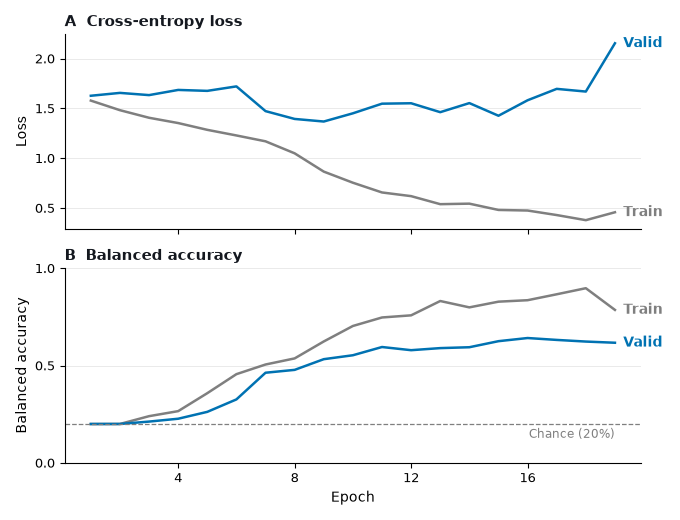
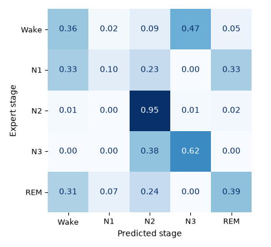

Note
Go to the end to download the full example code.
Sleep staging on the Sleep Physionet dataset using Chambon2018 network#
This tutorial shows how to train and test a sleep staging neural network with Braindecode. We adapt the time distributed approach of [1] to learn on sequences of EEG windows using the openly accessible Sleep Physionet dataset [2] [3].
# Authors: Hubert Banville <hubert.jbanville@gmail.com>
#
# License: BSD (3-clause)
Loading and preprocessing the dataset#
Loading#
First, we load the data using the
braindecode.datasets.sleep_physionet.SleepPhysionet class. We load
two recordings from two different individuals: we will use the first one to
train our network and the second one to evaluate performance (as in the MNE
sleep staging example).
from numbers import Integral
from braindecode.datasets import SleepPhysionet
subject_ids = [0, 1]
dataset = SleepPhysionet(subject_ids=subject_ids, recording_ids=[2], crop_wake_mins=30)
Downloading data from 'https://physionet.org/physiobank/database/sleep-edfx/sleep-cassette//SC4002E0-PSG.edf' to file '/home/runner/mne_data/physionet-sleep-data/SC4002E0-PSG.edf'.
0%| | 0.00/51.6M [00:00<?, ?B/s]
0%| | 82.9k/51.6M [00:00<01:30, 570kB/s]
1%|▏ | 263k/51.6M [00:00<00:46, 1.11MB/s]
1%|▎ | 380k/51.6M [00:00<00:48, 1.05MB/s]
1%|▎ | 488k/51.6M [00:00<00:51, 1.00MB/s]
1%|▍ | 591k/51.6M [00:00<00:59, 856kB/s]
1%|▌ | 680k/51.6M [00:00<00:59, 859kB/s]
1%|▌ | 768k/51.6M [00:00<00:59, 859kB/s]
2%|▋ | 856k/51.6M [00:00<01:01, 825kB/s]
2%|▋ | 940k/51.6M [00:01<01:01, 825kB/s]
2%|▊ | 1.03M/51.6M [00:01<01:00, 840kB/s]
2%|▊ | 1.13M/51.6M [00:01<00:58, 870kB/s]
2%|▉ | 1.22M/51.6M [00:01<01:05, 765kB/s]
3%|▉ | 1.34M/51.6M [00:01<00:59, 847kB/s]
3%|█ | 1.43M/51.6M [00:01<00:59, 843kB/s]
3%|█ | 1.52M/51.6M [00:01<01:01, 818kB/s]
3%|█▏ | 1.60M/51.6M [00:01<01:01, 810kB/s]
3%|█▏ | 1.68M/51.6M [00:01<01:03, 790kB/s]
3%|█▎ | 1.76M/51.6M [00:02<01:04, 777kB/s]
4%|█▎ | 1.84M/51.6M [00:02<01:07, 739kB/s]
4%|█▍ | 1.92M/51.6M [00:02<01:10, 702kB/s]
4%|█▍ | 2.00M/51.6M [00:02<01:10, 703kB/s]
4%|█▌ | 2.08M/51.6M [00:02<01:10, 699kB/s]
4%|█▌ | 2.15M/51.6M [00:02<01:13, 673kB/s]
4%|█▋ | 2.22M/51.6M [00:02<01:14, 667kB/s]
4%|█▋ | 2.29M/51.6M [00:02<01:18, 632kB/s]
5%|█▋ | 2.35M/51.6M [00:03<01:18, 630kB/s]
5%|█▊ | 2.41M/51.6M [00:03<01:18, 630kB/s]
5%|█▊ | 2.48M/51.6M [00:03<01:20, 614kB/s]
5%|█▊ | 2.54M/51.6M [00:03<01:21, 603kB/s]
5%|█▉ | 2.60M/51.6M [00:03<01:21, 601kB/s]
5%|█▉ | 2.66M/51.6M [00:03<01:25, 572kB/s]
5%|██ | 2.72M/51.6M [00:03<01:28, 555kB/s]
5%|██ | 2.80M/51.6M [00:03<01:23, 584kB/s]
6%|██ | 2.88M/51.6M [00:03<01:19, 616kB/s]
6%|██▏ | 2.96M/51.6M [00:04<01:15, 645kB/s]
6%|██▏ | 3.03M/51.6M [00:04<01:16, 638kB/s]
6%|██▎ | 3.13M/51.6M [00:04<01:09, 696kB/s]
6%|██▍ | 3.23M/51.6M [00:04<01:03, 762kB/s]
6%|██▍ | 3.33M/51.6M [00:04<01:00, 801kB/s]
7%|██▌ | 3.41M/51.6M [00:04<01:13, 660kB/s]
7%|██▌ | 3.52M/51.6M [00:04<01:05, 735kB/s]
7%|██▋ | 3.60M/51.6M [00:04<01:07, 710kB/s]
7%|██▋ | 3.67M/51.6M [00:05<01:16, 624kB/s]
7%|██▊ | 3.74M/51.6M [00:05<01:16, 623kB/s]
7%|██▊ | 3.82M/51.6M [00:05<01:15, 632kB/s]
8%|██▊ | 3.90M/51.6M [00:05<01:12, 659kB/s]
8%|██▉ | 3.98M/51.6M [00:05<01:08, 694kB/s]
8%|██▉ | 4.06M/51.6M [00:05<01:06, 718kB/s]
8%|███ | 4.16M/51.6M [00:05<01:03, 753kB/s]
8%|███▏ | 4.26M/51.6M [00:05<00:59, 794kB/s]
8%|███▏ | 4.38M/51.6M [00:05<00:54, 863kB/s]
9%|███▎ | 4.47M/51.6M [00:06<00:53, 879kB/s]
9%|███▎ | 4.57M/51.6M [00:06<00:52, 903kB/s]
9%|███▍ | 4.66M/51.6M [00:06<00:59, 786kB/s]
9%|███▌ | 4.77M/51.6M [00:06<00:57, 818kB/s]
9%|███▌ | 4.85M/51.6M [00:06<01:03, 738kB/s]
10%|███▋ | 4.93M/51.6M [00:06<01:04, 728kB/s]
10%|███▋ | 5.00M/51.6M [00:06<01:07, 692kB/s]
10%|███▋ | 5.08M/51.6M [00:06<01:07, 691kB/s]
10%|███▊ | 5.16M/51.6M [00:07<01:05, 706kB/s]
10%|███▊ | 5.26M/51.6M [00:07<01:02, 740kB/s]
10%|███▉ | 5.36M/51.6M [00:07<00:58, 787kB/s]
11%|████ | 5.46M/51.6M [00:07<00:56, 812kB/s]
11%|████ | 5.56M/51.6M [00:07<00:54, 842kB/s]
11%|████▏ | 5.65M/51.6M [00:07<00:54, 850kB/s]
11%|████▏ | 5.75M/51.6M [00:07<00:52, 873kB/s]
11%|████▎ | 5.85M/51.6M [00:07<00:50, 898kB/s]
12%|████▍ | 5.95M/51.6M [00:07<00:50, 900kB/s]
12%|████▍ | 6.04M/51.6M [00:08<00:50, 894kB/s]
12%|████▌ | 6.13M/51.6M [00:08<00:53, 851kB/s]
12%|████▌ | 6.23M/51.6M [00:08<00:53, 852kB/s]
12%|████▋ | 6.33M/51.6M [00:08<00:52, 866kB/s]
12%|████▋ | 6.42M/51.6M [00:08<00:52, 857kB/s]
13%|████▊ | 6.51M/51.6M [00:08<00:54, 821kB/s]
13%|████▊ | 6.59M/51.6M [00:08<00:57, 788kB/s]
13%|████▉ | 6.67M/51.6M [00:08<00:57, 781kB/s]
13%|████▉ | 6.77M/51.6M [00:08<00:56, 796kB/s]
13%|█████ | 6.87M/51.6M [00:09<00:55, 811kB/s]
13%|█████▏ | 6.96M/51.6M [00:09<00:53, 837kB/s]
14%|█████▏ | 7.08M/51.6M [00:09<00:50, 874kB/s]
14%|█████▎ | 7.19M/51.6M [00:09<00:48, 922kB/s]
14%|█████▍ | 7.31M/51.6M [00:09<00:46, 950kB/s]
14%|█████▍ | 7.41M/51.6M [00:09<00:46, 951kB/s]
15%|█████▌ | 7.52M/51.6M [00:09<00:45, 964kB/s]
15%|█████▍ | 7.64M/51.6M [00:09<00:43, 1.00MB/s]
15%|█████▌ | 7.74M/51.6M [00:09<00:43, 1.00MB/s]
15%|█████▊ | 7.84M/51.6M [00:10<00:44, 980kB/s]
15%|█████▊ | 7.94M/51.6M [00:10<00:46, 933kB/s]
16%|█████▉ | 8.03M/51.6M [00:10<00:48, 905kB/s]
16%|█████▉ | 8.12M/51.6M [00:10<00:48, 898kB/s]
16%|██████ | 8.21M/51.6M [00:10<00:53, 809kB/s]
16%|██████ | 8.31M/51.6M [00:10<00:52, 829kB/s]
16%|██████▏ | 8.41M/51.6M [00:10<00:50, 852kB/s]
16%|██████▎ | 8.50M/51.6M [00:10<00:49, 880kB/s]
17%|██████▎ | 8.59M/51.6M [00:10<00:48, 879kB/s]
17%|██████▍ | 8.68M/51.6M [00:11<00:50, 856kB/s]
17%|██████▍ | 8.77M/51.6M [00:11<00:52, 815kB/s]
17%|██████▌ | 8.85M/51.6M [00:11<00:57, 742kB/s]
17%|██████▌ | 8.96M/51.6M [00:11<00:53, 790kB/s]
18%|██████▋ | 9.04M/51.6M [00:11<00:54, 778kB/s]
18%|██████▋ | 9.13M/51.6M [00:11<00:55, 772kB/s]
18%|██████▊ | 9.23M/51.6M [00:11<00:53, 795kB/s]
18%|██████▊ | 9.31M/51.6M [00:11<00:53, 791kB/s]
18%|██████▉ | 9.39M/51.6M [00:11<00:53, 792kB/s]
18%|██████▉ | 9.49M/51.6M [00:12<00:51, 813kB/s]
19%|███████ | 9.59M/51.6M [00:12<00:50, 824kB/s]
19%|███████▏ | 9.68M/51.6M [00:12<00:50, 830kB/s]
19%|███████▏ | 9.77M/51.6M [00:12<00:50, 829kB/s]
19%|███████▎ | 9.86M/51.6M [00:12<00:49, 852kB/s]
19%|███████▎ | 9.96M/51.6M [00:12<00:54, 765kB/s]
20%|███████▍ | 10.1M/51.6M [00:12<00:51, 811kB/s]
20%|███████▍ | 10.2M/51.6M [00:12<00:55, 742kB/s]
20%|███████▌ | 10.2M/51.6M [00:13<00:56, 730kB/s]
20%|███████▌ | 10.3M/51.6M [00:13<00:59, 693kB/s]
20%|███████▋ | 10.4M/51.6M [00:13<01:00, 683kB/s]
20%|███████▋ | 10.5M/51.6M [00:13<00:59, 692kB/s]
20%|███████▊ | 10.6M/51.6M [00:13<00:55, 736kB/s]
21%|███████▊ | 10.7M/51.6M [00:13<00:52, 779kB/s]
21%|███████▉ | 10.7M/51.6M [00:13<00:54, 745kB/s]
21%|███████▉ | 10.8M/51.6M [00:13<00:55, 737kB/s]
21%|████████ | 10.9M/51.6M [00:13<00:55, 738kB/s]
21%|████████ | 11.0M/51.6M [00:14<00:56, 724kB/s]
21%|████████▏ | 11.1M/51.6M [00:14<00:55, 728kB/s]
22%|████████▏ | 11.1M/51.6M [00:14<00:56, 719kB/s]
22%|████████▎ | 11.2M/51.6M [00:14<00:57, 708kB/s]
22%|████████▎ | 11.3M/51.6M [00:14<00:58, 690kB/s]
22%|████████▎ | 11.4M/51.6M [00:14<01:02, 641kB/s]
22%|████████▍ | 11.4M/51.6M [00:14<01:01, 657kB/s]
22%|████████▍ | 11.5M/51.6M [00:14<00:58, 686kB/s]
22%|████████▌ | 11.6M/51.6M [00:14<00:56, 706kB/s]
23%|████████▌ | 11.7M/51.6M [00:15<00:54, 734kB/s]
23%|████████▋ | 11.8M/51.6M [00:15<00:54, 735kB/s]
23%|████████▋ | 11.9M/51.6M [00:15<00:52, 752kB/s]
23%|████████▊ | 11.9M/51.6M [00:15<00:52, 751kB/s]
23%|████████▊ | 12.0M/51.6M [00:15<00:54, 722kB/s]
23%|████████▉ | 12.1M/51.6M [00:15<00:56, 694kB/s]
24%|████████▉ | 12.2M/51.6M [00:15<00:55, 709kB/s]
24%|█████████ | 12.3M/51.6M [00:15<00:53, 735kB/s]
24%|█████████ | 12.4M/51.6M [00:15<00:50, 773kB/s]
24%|█████████▏ | 12.4M/51.6M [00:16<00:56, 693kB/s]
24%|█████████▏ | 12.5M/51.6M [00:16<00:51, 761kB/s]
24%|█████████▎ | 12.6M/51.6M [00:16<00:52, 747kB/s]
25%|█████████▎ | 12.7M/51.6M [00:16<00:57, 682kB/s]
25%|█████████▍ | 12.8M/51.6M [00:16<01:00, 643kB/s]
25%|█████████▍ | 12.8M/51.6M [00:16<01:02, 624kB/s]
25%|█████████▍ | 12.9M/51.6M [00:16<01:02, 623kB/s]
25%|█████████▌ | 13.0M/51.6M [00:16<01:02, 622kB/s]
25%|█████████▌ | 13.0M/51.6M [00:17<01:02, 617kB/s]
25%|█████████▋ | 13.1M/51.6M [00:17<00:59, 646kB/s]
26%|█████████▋ | 13.2M/51.6M [00:17<00:58, 656kB/s]
26%|█████████▊ | 13.3M/51.6M [00:17<00:57, 662kB/s]
26%|█████████▊ | 13.3M/51.6M [00:17<00:59, 642kB/s]
26%|█████████▊ | 13.4M/51.6M [00:17<00:59, 637kB/s]
26%|█████████▉ | 13.5M/51.6M [00:17<00:58, 652kB/s]
26%|█████████▉ | 13.6M/51.6M [00:17<00:59, 643kB/s]
26%|██████████ | 13.6M/51.6M [00:17<00:56, 678kB/s]
27%|██████████ | 13.7M/51.6M [00:18<00:53, 715kB/s]
27%|██████████▏ | 13.8M/51.6M [00:18<00:49, 767kB/s]
27%|██████████▏ | 13.9M/51.6M [00:18<00:48, 784kB/s]
27%|██████████▎ | 14.0M/51.6M [00:18<00:51, 737kB/s]
27%|██████████▎ | 14.1M/51.6M [00:18<00:50, 746kB/s]
27%|██████████▍ | 14.2M/51.6M [00:18<00:50, 745kB/s]
28%|██████████▍ | 14.3M/51.6M [00:18<00:49, 757kB/s]
28%|██████████▌ | 14.3M/51.6M [00:18<00:48, 764kB/s]
28%|██████████▌ | 14.4M/51.6M [00:18<00:48, 767kB/s]
28%|██████████▋ | 14.5M/51.6M [00:19<00:48, 769kB/s]
28%|██████████▋ | 14.6M/51.6M [00:19<00:47, 779kB/s]
28%|██████████▊ | 14.7M/51.6M [00:19<00:46, 803kB/s]
29%|██████████▊ | 14.8M/51.6M [00:19<00:46, 798kB/s]
29%|██████████▉ | 14.8M/51.6M [00:19<00:46, 785kB/s]
29%|███████████ | 14.9M/51.6M [00:19<00:46, 794kB/s]
29%|███████████ | 15.0M/51.6M [00:19<00:47, 770kB/s]
29%|███████████ | 15.1M/51.6M [00:19<00:47, 772kB/s]
29%|███████████▏ | 15.2M/51.6M [00:19<00:48, 753kB/s]
30%|███████████▏ | 15.3M/51.6M [00:20<00:48, 747kB/s]
30%|███████████▎ | 15.4M/51.6M [00:20<00:49, 730kB/s]
30%|███████████▎ | 15.4M/51.6M [00:20<00:49, 729kB/s]
30%|███████████▍ | 15.5M/51.6M [00:20<00:49, 729kB/s]
30%|███████████▍ | 15.6M/51.6M [00:20<00:50, 715kB/s]
30%|███████████▌ | 15.7M/51.6M [00:20<00:46, 770kB/s]
31%|███████████▌ | 15.8M/51.6M [00:20<00:47, 749kB/s]
31%|███████████▋ | 15.8M/51.6M [00:20<00:49, 727kB/s]
31%|███████████▋ | 15.9M/51.6M [00:20<00:49, 716kB/s]
31%|███████████▊ | 16.0M/51.6M [00:21<00:49, 719kB/s]
31%|███████████▊ | 16.1M/51.6M [00:21<00:48, 736kB/s]
31%|███████████▉ | 16.2M/51.6M [00:21<00:48, 732kB/s]
31%|███████████▉ | 16.3M/51.6M [00:21<00:48, 723kB/s]
32%|████████████ | 16.3M/51.6M [00:21<00:48, 721kB/s]
32%|████████████ | 16.4M/51.6M [00:21<00:49, 717kB/s]
32%|████████████▏ | 16.5M/51.6M [00:21<00:49, 706kB/s]
32%|████████████▏ | 16.6M/51.6M [00:21<00:51, 680kB/s]
32%|████████████▎ | 16.6M/51.6M [00:21<00:51, 674kB/s]
32%|████████████▎ | 16.7M/51.6M [00:22<00:51, 674kB/s]
33%|████████████▎ | 16.8M/51.6M [00:22<00:54, 636kB/s]
33%|████████████▍ | 16.9M/51.6M [00:22<00:53, 646kB/s]
33%|████████████▍ | 16.9M/51.6M [00:22<00:54, 640kB/s]
33%|████████████▌ | 17.0M/51.6M [00:22<00:54, 633kB/s]
33%|████████████▌ | 17.1M/51.6M [00:22<00:54, 637kB/s]
33%|████████████▌ | 17.1M/51.6M [00:22<00:51, 666kB/s]
33%|████████████▋ | 17.2M/51.6M [00:22<00:48, 714kB/s]
34%|████████████▋ | 17.3M/51.6M [00:22<00:47, 716kB/s]
34%|████████████▊ | 17.4M/51.6M [00:23<00:46, 733kB/s]
34%|████████████▊ | 17.5M/51.6M [00:23<00:45, 754kB/s]
34%|████████████▉ | 17.6M/51.6M [00:23<00:44, 768kB/s]
34%|█████████████ | 17.7M/51.6M [00:23<00:42, 790kB/s]
34%|█████████████ | 17.8M/51.6M [00:23<00:42, 804kB/s]
35%|█████████████▏ | 17.9M/51.6M [00:23<00:45, 738kB/s]
35%|█████████████▏ | 18.0M/51.6M [00:23<00:39, 847kB/s]
35%|█████████████▎ | 18.1M/51.6M [00:23<00:39, 845kB/s]
35%|█████████████▍ | 18.2M/51.6M [00:24<00:39, 844kB/s]
35%|█████████████▍ | 18.3M/51.6M [00:24<00:42, 788kB/s]
36%|█████████████▍ | 18.3M/51.6M [00:24<00:42, 788kB/s]
36%|█████████████▌ | 18.4M/51.6M [00:24<00:43, 755kB/s]
36%|█████████████▌ | 18.5M/51.6M [00:24<00:44, 745kB/s]
36%|█████████████▋ | 18.6M/51.6M [00:24<00:44, 744kB/s]
36%|█████████████▋ | 18.6M/51.6M [00:24<00:47, 696kB/s]
36%|█████████████▊ | 18.7M/51.6M [00:24<00:46, 704kB/s]
36%|█████████████▊ | 18.8M/51.6M [00:24<00:45, 722kB/s]
37%|█████████████▉ | 18.9M/51.6M [00:25<00:41, 779kB/s]
37%|█████████████▉ | 19.0M/51.6M [00:25<00:43, 750kB/s]
37%|██████████████ | 19.1M/51.6M [00:25<00:46, 697kB/s]
37%|██████████████ | 19.2M/51.6M [00:25<00:42, 771kB/s]
37%|██████████████▏ | 19.3M/51.6M [00:25<00:42, 766kB/s]
37%|██████████████▏ | 19.3M/51.6M [00:25<00:41, 775kB/s]
38%|██████████████▎ | 19.4M/51.6M [00:25<00:42, 758kB/s]
38%|██████████████▎ | 19.5M/51.6M [00:25<00:41, 775kB/s]
38%|██████████████▍ | 19.6M/51.6M [00:25<00:41, 779kB/s]
38%|██████████████▍ | 19.7M/51.6M [00:26<00:39, 810kB/s]
38%|██████████████▌ | 19.8M/51.6M [00:26<00:37, 851kB/s]
39%|██████████████▋ | 19.9M/51.6M [00:26<00:36, 881kB/s]
39%|██████████████▋ | 20.0M/51.6M [00:26<00:35, 899kB/s]
39%|██████████████▊ | 20.1M/51.6M [00:26<00:34, 919kB/s]
39%|██████████████▊ | 20.2M/51.6M [00:26<00:34, 912kB/s]
39%|██████████████▉ | 20.3M/51.6M [00:26<00:34, 898kB/s]
39%|██████████████▉ | 20.4M/51.6M [00:26<00:34, 897kB/s]
40%|███████████████ | 20.5M/51.6M [00:26<00:35, 873kB/s]
40%|███████████████▏ | 20.6M/51.6M [00:27<00:35, 868kB/s]
40%|███████████████▏ | 20.7M/51.6M [00:27<00:35, 875kB/s]
40%|███████████████▎ | 20.7M/51.6M [00:27<00:35, 863kB/s]
40%|███████████████▎ | 20.8M/51.6M [00:27<00:36, 835kB/s]
41%|███████████████▍ | 20.9M/51.6M [00:27<00:37, 825kB/s]
41%|███████████████▍ | 21.0M/51.6M [00:27<00:38, 794kB/s]
41%|███████████████▌ | 21.1M/51.6M [00:27<00:39, 765kB/s]
41%|███████████████▌ | 21.2M/51.6M [00:27<00:42, 719kB/s]
41%|███████████████▋ | 21.2M/51.6M [00:27<00:42, 716kB/s]
41%|███████████████▋ | 21.3M/51.6M [00:28<00:43, 692kB/s]
41%|███████████████▊ | 21.4M/51.6M [00:28<00:42, 704kB/s]
42%|███████████████▊ | 21.5M/51.6M [00:28<00:42, 716kB/s]
42%|███████████████▊ | 21.6M/51.6M [00:28<00:40, 742kB/s]
42%|███████████████▉ | 21.7M/51.6M [00:28<00:38, 782kB/s]
42%|████████████████ | 21.8M/51.6M [00:28<00:36, 811kB/s]
42%|████████████████ | 21.9M/51.6M [00:28<00:36, 817kB/s]
43%|████████████████▏ | 21.9M/51.6M [00:28<00:37, 789kB/s]
43%|████████████████▏ | 22.0M/51.6M [00:28<00:38, 772kB/s]
43%|████████████████▎ | 22.1M/51.6M [00:29<00:38, 767kB/s]
43%|████████████████▎ | 22.2M/51.6M [00:29<00:39, 744kB/s]
43%|████████████████▍ | 22.3M/51.6M [00:29<00:41, 715kB/s]
43%|████████████████▍ | 22.3M/51.6M [00:29<00:42, 690kB/s]
43%|████████████████▍ | 22.4M/51.6M [00:29<00:42, 682kB/s]
44%|████████████████▌ | 22.5M/51.6M [00:29<00:43, 664kB/s]
44%|████████████████▌ | 22.5M/51.6M [00:29<00:44, 661kB/s]
44%|████████████████▋ | 22.6M/51.6M [00:29<00:43, 660kB/s]
44%|████████████████▋ | 22.7M/51.6M [00:29<00:41, 699kB/s]
44%|████████████████▊ | 22.8M/51.6M [00:30<00:38, 748kB/s]
44%|████████████████▊ | 22.9M/51.6M [00:30<00:38, 746kB/s]
44%|████████████████▉ | 22.9M/51.6M [00:30<00:41, 696kB/s]
45%|████████████████▉ | 23.0M/51.6M [00:30<00:40, 709kB/s]
45%|█████████████████ | 23.1M/51.6M [00:30<00:40, 701kB/s]
45%|█████████████████ | 23.2M/51.6M [00:30<00:40, 707kB/s]
45%|█████████████████▏ | 23.3M/51.6M [00:30<00:40, 699kB/s]
45%|█████████████████▏ | 23.4M/51.6M [00:30<00:40, 697kB/s]
45%|█████████████████▎ | 23.4M/51.6M [00:30<00:40, 689kB/s]
46%|█████████████████▎ | 23.5M/51.6M [00:31<00:41, 683kB/s]
46%|█████████████████▎ | 23.6M/51.6M [00:31<00:41, 682kB/s]
46%|█████████████████▍ | 23.7M/51.6M [00:31<00:41, 675kB/s]
46%|█████████████████▍ | 23.7M/51.6M [00:31<00:42, 651kB/s]
46%|█████████████████▌ | 23.8M/51.6M [00:31<00:41, 668kB/s]
46%|█████████████████▌ | 23.9M/51.6M [00:31<00:37, 731kB/s]
46%|█████████████████▋ | 24.0M/51.6M [00:31<00:38, 718kB/s]
47%|█████████████████▋ | 24.1M/51.6M [00:31<00:39, 703kB/s]
47%|█████████████████▊ | 24.1M/51.6M [00:31<00:43, 639kB/s]
47%|█████████████████▊ | 24.2M/51.6M [00:32<00:42, 641kB/s]
47%|█████████████████▊ | 24.3M/51.6M [00:32<00:42, 641kB/s]
47%|█████████████████▉ | 24.3M/51.6M [00:32<00:48, 566kB/s]
47%|█████████████████▉ | 24.4M/51.6M [00:32<00:44, 610kB/s]
47%|██████████████████ | 24.5M/51.6M [00:32<00:45, 600kB/s]
48%|██████████████████ | 24.5M/51.6M [00:32<00:44, 613kB/s]
48%|██████████████████▏ | 24.6M/51.6M [00:32<00:42, 633kB/s]
48%|██████████████████▏ | 24.7M/51.6M [00:32<00:40, 657kB/s]
48%|██████████████████▏ | 24.8M/51.6M [00:33<00:42, 631kB/s]
48%|██████████████████▎ | 24.8M/51.6M [00:33<00:42, 623kB/s]
48%|██████████████████▎ | 24.9M/51.6M [00:33<00:43, 616kB/s]
48%|██████████████████▍ | 25.0M/51.6M [00:33<00:42, 624kB/s]
49%|██████████████████▍ | 25.1M/51.6M [00:33<00:42, 631kB/s]
49%|██████████████████▍ | 25.1M/51.6M [00:33<00:41, 633kB/s]
49%|██████████████████▌ | 25.2M/51.6M [00:33<00:43, 611kB/s]
49%|██████████████████▌ | 25.2M/51.6M [00:33<00:42, 617kB/s]
49%|██████████████████▋ | 25.3M/51.6M [00:33<00:42, 618kB/s]
49%|██████████████████▋ | 25.4M/51.6M [00:34<00:42, 618kB/s]
49%|██████████████████▋ | 25.4M/51.6M [00:34<00:41, 627kB/s]
49%|██████████████████▊ | 25.5M/51.6M [00:34<00:40, 640kB/s]
50%|██████████████████▊ | 25.6M/51.6M [00:34<00:39, 659kB/s]
50%|██████████████████▉ | 25.7M/51.6M [00:34<00:36, 707kB/s]
50%|██████████████████▉ | 25.8M/51.6M [00:34<00:35, 730kB/s]
50%|███████████████████ | 25.9M/51.6M [00:34<00:33, 761kB/s]
50%|███████████████████ | 26.0M/51.6M [00:34<00:34, 739kB/s]
50%|███████████████████▏ | 26.0M/51.6M [00:34<00:35, 728kB/s]
51%|███████████████████▏ | 26.1M/51.6M [00:35<00:39, 647kB/s]
51%|███████████████████▎ | 26.2M/51.6M [00:35<00:41, 611kB/s]
51%|███████████████████▎ | 26.2M/51.6M [00:35<00:43, 588kB/s]
51%|███████████████████▎ | 26.3M/51.6M [00:35<00:42, 591kB/s]
51%|███████████████████▍ | 26.4M/51.6M [00:35<00:41, 602kB/s]
51%|███████████████████▍ | 26.5M/51.6M [00:35<00:39, 638kB/s]
51%|███████████████████▌ | 26.5M/51.6M [00:35<00:37, 662kB/s]
52%|███████████████████▌ | 26.6M/51.6M [00:35<00:35, 698kB/s]
52%|███████████████████▋ | 26.7M/51.6M [00:35<00:34, 718kB/s]
52%|███████████████████▋ | 26.8M/51.6M [00:36<00:38, 642kB/s]
52%|███████████████████▊ | 26.9M/51.6M [00:36<00:35, 707kB/s]
52%|███████████████████▊ | 27.0M/51.6M [00:36<00:34, 709kB/s]
52%|███████████████████▉ | 27.0M/51.6M [00:36<00:34, 711kB/s]
52%|███████████████████▉ | 27.1M/51.6M [00:36<00:35, 689kB/s]
53%|███████████████████▉ | 27.2M/51.6M [00:36<00:39, 615kB/s]
53%|████████████████████ | 27.2M/51.6M [00:36<00:40, 605kB/s]
53%|████████████████████ | 27.3M/51.6M [00:36<00:39, 613kB/s]
53%|████████████████████▏ | 27.4M/51.6M [00:37<00:39, 610kB/s]
53%|████████████████████▏ | 27.4M/51.6M [00:37<00:38, 633kB/s]
53%|████████████████████▎ | 27.5M/51.6M [00:37<00:37, 639kB/s]
53%|████████████████████▎ | 27.6M/51.6M [00:37<00:36, 656kB/s]
54%|████████████████████▍ | 27.7M/51.6M [00:37<00:35, 667kB/s]
54%|████████████████████▍ | 27.8M/51.6M [00:37<00:35, 671kB/s]
54%|████████████████████▍ | 27.8M/51.6M [00:37<00:38, 625kB/s]
54%|████████████████████▌ | 27.9M/51.6M [00:37<00:34, 687kB/s]
54%|████████████████████▌ | 28.0M/51.6M [00:37<00:34, 690kB/s]
54%|████████████████████▋ | 28.1M/51.6M [00:38<00:33, 698kB/s]
55%|████████████████████▋ | 28.2M/51.6M [00:38<00:33, 694kB/s]
55%|████████████████████▊ | 28.2M/51.6M [00:38<00:33, 694kB/s]
55%|████████████████████▊ | 28.3M/51.6M [00:38<00:36, 640kB/s]
55%|████████████████████▉ | 28.4M/51.6M [00:38<00:37, 621kB/s]
55%|████████████████████▉ | 28.4M/51.6M [00:38<00:38, 596kB/s]
55%|████████████████████▉ | 28.5M/51.6M [00:38<00:38, 594kB/s]
55%|█████████████████████ | 28.6M/51.6M [00:38<00:38, 593kB/s]
55%|█████████████████████ | 28.6M/51.6M [00:38<00:35, 638kB/s]
56%|█████████████████████▏ | 28.7M/51.6M [00:39<00:35, 644kB/s]
56%|█████████████████████▏ | 28.8M/51.6M [00:39<00:34, 655kB/s]
56%|█████████████████████▎ | 28.9M/51.6M [00:39<00:34, 653kB/s]
56%|█████████████████████▎ | 29.0M/51.6M [00:39<00:34, 663kB/s]
56%|█████████████████████▎ | 29.0M/51.6M [00:39<00:33, 683kB/s]
56%|█████████████████████▍ | 29.1M/51.6M [00:39<00:32, 686kB/s]
57%|█████████████████████▍ | 29.2M/51.6M [00:39<00:31, 716kB/s]
57%|█████████████████████▌ | 29.3M/51.6M [00:39<00:29, 750kB/s]
57%|█████████████████████▋ | 29.4M/51.6M [00:39<00:28, 767kB/s]
57%|█████████████████████▋ | 29.5M/51.6M [00:40<00:27, 798kB/s]
57%|█████████████████████▊ | 29.6M/51.6M [00:40<00:26, 818kB/s]
57%|█████████████████████▊ | 29.7M/51.6M [00:40<00:25, 857kB/s]
58%|█████████████████████▉ | 29.8M/51.6M [00:40<00:24, 875kB/s]
58%|█████████████████████▉ | 29.9M/51.6M [00:40<00:26, 829kB/s]
58%|██████████████████████ | 29.9M/51.6M [00:40<00:26, 823kB/s]
58%|██████████████████████ | 30.0M/51.6M [00:40<00:26, 817kB/s]
58%|██████████████████████▏ | 30.1M/51.6M [00:40<00:26, 813kB/s]
58%|██████████████████████▏ | 30.2M/51.6M [00:40<00:26, 804kB/s]
59%|██████████████████████▎ | 30.3M/51.6M [00:41<00:26, 808kB/s]
59%|██████████████████████▎ | 30.4M/51.6M [00:41<00:27, 763kB/s]
59%|██████████████████████▍ | 30.5M/51.6M [00:41<00:28, 753kB/s]
59%|██████████████████████▍ | 30.5M/51.6M [00:41<00:28, 749kB/s]
59%|██████████████████████▌ | 30.6M/51.6M [00:41<00:27, 753kB/s]
59%|██████████████████████▌ | 30.7M/51.6M [00:41<00:27, 758kB/s]
60%|██████████████████████▋ | 30.8M/51.6M [00:41<00:27, 767kB/s]
60%|██████████████████████▋ | 30.9M/51.6M [00:41<00:26, 771kB/s]
60%|██████████████████████▊ | 31.0M/51.6M [00:41<00:24, 844kB/s]
60%|██████████████████████▉ | 31.1M/51.6M [00:42<00:24, 850kB/s]
60%|██████████████████████▉ | 31.2M/51.6M [00:42<00:28, 708kB/s]
61%|███████████████████████ | 31.3M/51.6M [00:42<00:27, 727kB/s]
61%|███████████████████████ | 31.3M/51.6M [00:42<00:28, 701kB/s]
61%|███████████████████████ | 31.4M/51.6M [00:42<00:31, 641kB/s]
61%|███████████████████████▏ | 31.5M/51.6M [00:42<00:31, 634kB/s]
61%|███████████████████████▏ | 31.6M/51.6M [00:42<00:30, 652kB/s]
61%|███████████████████████▎ | 31.6M/51.6M [00:42<00:29, 682kB/s]
61%|███████████████████████▎ | 31.7M/51.6M [00:43<00:28, 707kB/s]
62%|███████████████████████▍ | 31.8M/51.6M [00:43<00:26, 742kB/s]
62%|███████████████████████▍ | 31.9M/51.6M [00:43<00:26, 732kB/s]
62%|███████████████████████▌ | 32.0M/51.6M [00:43<00:30, 642kB/s]
62%|███████████████████████▌ | 32.0M/51.6M [00:43<00:32, 605kB/s]
62%|███████████████████████▋ | 32.1M/51.6M [00:43<00:32, 602kB/s]
62%|███████████████████████▋ | 32.2M/51.6M [00:43<00:34, 564kB/s]
62%|███████████████████████▋ | 32.2M/51.6M [00:43<00:35, 540kB/s]
63%|███████████████████████▊ | 32.3M/51.6M [00:44<00:35, 543kB/s]
63%|███████████████████████▊ | 32.4M/51.6M [00:44<00:32, 587kB/s]
63%|███████████████████████▉ | 32.4M/51.6M [00:44<00:31, 611kB/s]
63%|███████████████████████▉ | 32.5M/51.6M [00:44<00:31, 615kB/s]
63%|███████████████████████▉ | 32.6M/51.6M [00:44<00:30, 617kB/s]
63%|████████████████████████ | 32.6M/51.6M [00:44<00:31, 605kB/s]
63%|████████████████████████ | 32.7M/51.6M [00:44<00:31, 599kB/s]
63%|████████████████████████ | 32.8M/51.6M [00:44<00:30, 618kB/s]
64%|████████████████████████▏ | 32.9M/51.6M [00:44<00:28, 656kB/s]
64%|████████████████████████▏ | 32.9M/51.6M [00:45<00:26, 696kB/s]
64%|████████████████████████▎ | 33.0M/51.6M [00:45<00:25, 729kB/s]
64%|████████████████████████▎ | 33.1M/51.6M [00:45<00:24, 754kB/s]
64%|████████████████████████▍ | 33.2M/51.6M [00:45<00:23, 796kB/s]
64%|████████████████████████▌ | 33.3M/51.6M [00:45<00:21, 838kB/s]
65%|████████████████████████▌ | 33.4M/51.6M [00:45<00:21, 847kB/s]
65%|████████████████████████▋ | 33.5M/51.6M [00:45<00:24, 734kB/s]
65%|████████████████████████▋ | 33.6M/51.6M [00:45<00:21, 826kB/s]
65%|████████████████████████▊ | 33.7M/51.6M [00:45<00:21, 827kB/s]
65%|████████████████████████▊ | 33.8M/51.6M [00:46<00:22, 810kB/s]
66%|████████████████████████▉ | 33.8M/51.6M [00:46<00:22, 797kB/s]
66%|████████████████████████▉ | 33.9M/51.6M [00:46<00:24, 724kB/s]
66%|█████████████████████████ | 34.0M/51.6M [00:46<00:25, 686kB/s]
66%|█████████████████████████ | 34.1M/51.6M [00:46<00:25, 701kB/s]
66%|█████████████████████████▏ | 34.2M/51.6M [00:46<00:24, 703kB/s]
66%|█████████████████████████▏ | 34.2M/51.6M [00:46<00:24, 707kB/s]
66%|█████████████████████████▎ | 34.3M/51.6M [00:46<00:26, 648kB/s]
67%|█████████████████████████▎ | 34.4M/51.6M [00:46<00:24, 698kB/s]
67%|█████████████████████████▍ | 34.5M/51.6M [00:47<00:24, 691kB/s]
67%|█████████████████████████▍ | 34.6M/51.6M [00:47<00:24, 698kB/s]
67%|█████████████████████████▌ | 34.6M/51.6M [00:47<00:24, 699kB/s]
67%|█████████████████████████▌ | 34.7M/51.6M [00:47<00:24, 693kB/s]
67%|█████████████████████████▌ | 34.8M/51.6M [00:47<00:23, 721kB/s]
68%|█████████████████████████▋ | 34.9M/51.6M [00:47<00:21, 766kB/s]
68%|█████████████████████████▊ | 35.0M/51.6M [00:47<00:20, 797kB/s]
68%|█████████████████████████▊ | 35.1M/51.6M [00:47<00:20, 801kB/s]
68%|█████████████████████████▉ | 35.2M/51.6M [00:47<00:21, 767kB/s]
68%|█████████████████████████▉ | 35.2M/51.6M [00:48<00:21, 762kB/s]
68%|██████████████████████████ | 35.3M/51.6M [00:48<00:21, 771kB/s]
69%|██████████████████████████ | 35.4M/51.6M [00:48<00:20, 784kB/s]
69%|██████████████████████████▏ | 35.5M/51.6M [00:48<00:20, 795kB/s]
69%|██████████████████████████▏ | 35.6M/51.6M [00:48<00:20, 800kB/s]
69%|██████████████████████████▎ | 35.7M/51.6M [00:48<00:19, 816kB/s]
69%|██████████████████████████▎ | 35.8M/51.6M [00:48<00:18, 851kB/s]
70%|██████████████████████████▍ | 35.9M/51.6M [00:48<00:17, 891kB/s]
70%|██████████████████████████▍ | 36.0M/51.6M [00:48<00:17, 908kB/s]
70%|██████████████████████████▌ | 36.1M/51.6M [00:49<00:18, 852kB/s]
70%|██████████████████████████▌ | 36.2M/51.6M [00:49<00:18, 823kB/s]
70%|██████████████████████████▋ | 36.2M/51.6M [00:49<00:20, 742kB/s]
70%|██████████████████████████▋ | 36.3M/51.6M [00:49<00:22, 690kB/s]
70%|██████████████████████████▊ | 36.4M/51.6M [00:49<00:22, 690kB/s]
71%|██████████████████████████▊ | 36.5M/51.6M [00:49<00:22, 668kB/s]
71%|██████████████████████████▉ | 36.5M/51.6M [00:49<00:22, 673kB/s]
71%|██████████████████████████▉ | 36.6M/51.6M [00:49<00:20, 725kB/s]
71%|███████████████████████████ | 36.7M/51.6M [00:50<00:19, 750kB/s]
71%|███████████████████████████ | 36.8M/51.6M [00:50<00:21, 679kB/s]
72%|███████████████████████████▏ | 36.9M/51.6M [00:50<00:20, 732kB/s]
72%|███████████████████████████▏ | 37.0M/51.6M [00:50<00:20, 726kB/s]
72%|███████████████████████████▎ | 37.1M/51.6M [00:50<00:20, 721kB/s]
72%|███████████████████████████▎ | 37.2M/51.6M [00:50<00:20, 711kB/s]
72%|███████████████████████████▍ | 37.2M/51.6M [00:50<00:19, 721kB/s]
72%|███████████████████████████▍ | 37.3M/51.6M [00:50<00:18, 762kB/s]
72%|███████████████████████████▌ | 37.4M/51.6M [00:50<00:18, 768kB/s]
73%|███████████████████████████▌ | 37.5M/51.6M [00:51<00:20, 675kB/s]
73%|███████████████████████████▋ | 37.6M/51.6M [00:51<00:18, 745kB/s]
73%|███████████████████████████▋ | 37.7M/51.6M [00:51<00:18, 750kB/s]
73%|███████████████████████████▊ | 37.8M/51.6M [00:51<00:18, 760kB/s]
73%|███████████████████████████▊ | 37.8M/51.6M [00:51<00:17, 769kB/s]
73%|███████████████████████████▉ | 37.9M/51.6M [00:51<00:17, 779kB/s]
74%|███████████████████████████▉ | 38.0M/51.6M [00:51<00:16, 800kB/s]
74%|████████████████████████████ | 38.1M/51.6M [00:51<00:18, 738kB/s]
74%|████████████████████████████▏ | 38.2M/51.6M [00:52<00:17, 764kB/s]
74%|████████████████████████████▏ | 38.3M/51.6M [00:52<00:18, 739kB/s]
74%|████████████████████████████▏ | 38.4M/51.6M [00:52<00:17, 742kB/s]
74%|████████████████████████████▎ | 38.5M/51.6M [00:52<00:17, 757kB/s]
75%|████████████████████████████▎ | 38.5M/51.6M [00:52<00:16, 770kB/s]
75%|████████████████████████████▍ | 38.6M/51.6M [00:52<00:16, 782kB/s]
75%|████████████████████████████▍ | 38.7M/51.6M [00:52<00:18, 686kB/s]
75%|████████████████████████████▌ | 38.8M/51.6M [00:52<00:16, 769kB/s]
75%|████████████████████████████▋ | 38.9M/51.6M [00:52<00:17, 744kB/s]
76%|████████████████████████████▋ | 39.0M/51.6M [00:53<00:17, 731kB/s]
76%|████████████████████████████▊ | 39.1M/51.6M [00:53<00:16, 746kB/s]
76%|████████████████████████████▊ | 39.1M/51.6M [00:53<00:16, 738kB/s]
76%|████████████████████████████▊ | 39.2M/51.6M [00:53<00:17, 723kB/s]
76%|████████████████████████████▉ | 39.3M/51.6M [00:53<00:17, 701kB/s]
76%|████████████████████████████▉ | 39.4M/51.6M [00:53<00:17, 696kB/s]
76%|█████████████████████████████ | 39.5M/51.6M [00:53<00:17, 709kB/s]
77%|█████████████████████████████ | 39.6M/51.6M [00:53<00:16, 724kB/s]
77%|█████████████████████████████▏ | 39.6M/51.6M [00:53<00:16, 720kB/s]
77%|█████████████████████████████▏ | 39.7M/51.6M [00:54<00:16, 720kB/s]
77%|█████████████████████████████▎ | 39.8M/51.6M [00:54<00:16, 718kB/s]
77%|█████████████████████████████▎ | 39.9M/51.6M [00:54<00:17, 685kB/s]
77%|█████████████████████████████▍ | 39.9M/51.6M [00:54<00:17, 683kB/s]
78%|█████████████████████████████▍ | 40.0M/51.6M [00:54<00:16, 707kB/s]
78%|█████████████████████████████▌ | 40.1M/51.6M [00:54<00:15, 747kB/s]
78%|█████████████████████████████▌ | 40.2M/51.6M [00:54<00:14, 778kB/s]
78%|█████████████████████████████▋ | 40.3M/51.6M [00:54<00:16, 669kB/s]
78%|█████████████████████████████▊ | 40.4M/51.6M [00:55<00:15, 743kB/s]
78%|█████████████████████████████▊ | 40.5M/51.6M [00:55<00:15, 739kB/s]
79%|█████████████████████████████▊ | 40.6M/51.6M [00:55<00:14, 744kB/s]
79%|█████████████████████████████▉ | 40.7M/51.6M [00:55<00:16, 652kB/s]
79%|█████████████████████████████▉ | 40.7M/51.6M [00:55<00:17, 632kB/s]
79%|██████████████████████████████ | 40.8M/51.6M [00:55<00:17, 635kB/s]
79%|██████████████████████████████ | 40.9M/51.6M [00:55<00:16, 639kB/s]
79%|██████████████████████████████▏ | 40.9M/51.6M [00:55<00:15, 668kB/s]
79%|██████████████████████████████▏ | 41.0M/51.6M [00:55<00:15, 701kB/s]
80%|██████████████████████████████▎ | 41.1M/51.6M [00:56<00:14, 719kB/s]
80%|██████████████████████████████▎ | 41.2M/51.6M [00:56<00:13, 754kB/s]
80%|██████████████████████████████▍ | 41.3M/51.6M [00:56<00:13, 754kB/s]
80%|██████████████████████████████▍ | 41.4M/51.6M [00:56<00:13, 776kB/s]
80%|██████████████████████████████▌ | 41.5M/51.6M [00:56<00:13, 744kB/s]
80%|██████████████████████████████▌ | 41.6M/51.6M [00:56<00:12, 775kB/s]
81%|██████████████████████████████▋ | 41.6M/51.6M [00:56<00:13, 761kB/s]
81%|██████████████████████████████▋ | 41.7M/51.6M [00:56<00:13, 760kB/s]
81%|██████████████████████████████▊ | 41.8M/51.6M [00:56<00:13, 748kB/s]
81%|██████████████████████████████▊ | 41.9M/51.6M [00:57<00:12, 753kB/s]
81%|██████████████████████████████▉ | 42.0M/51.6M [00:57<00:12, 758kB/s]
81%|██████████████████████████████▉ | 42.0M/51.6M [00:57<00:14, 672kB/s]
82%|███████████████████████████████ | 42.2M/51.6M [00:57<00:12, 771kB/s]
82%|███████████████████████████████ | 42.2M/51.6M [00:57<00:12, 754kB/s]
82%|███████████████████████████████▏ | 42.3M/51.6M [00:57<00:12, 748kB/s]
82%|███████████████████████████████▏ | 42.4M/51.6M [00:57<00:12, 747kB/s]
82%|███████████████████████████████▎ | 42.5M/51.6M [00:57<00:11, 782kB/s]
82%|███████████████████████████████▎ | 42.6M/51.6M [00:58<00:11, 785kB/s]
83%|███████████████████████████████▍ | 42.7M/51.6M [00:58<00:11, 770kB/s]
83%|███████████████████████████████▍ | 42.7M/51.6M [00:58<00:11, 761kB/s]
83%|███████████████████████████████▌ | 42.8M/51.6M [00:58<00:11, 745kB/s]
83%|███████████████████████████████▌ | 42.9M/51.6M [00:58<00:12, 726kB/s]
83%|███████████████████████████████▋ | 43.0M/51.6M [00:58<00:11, 736kB/s]
83%|███████████████████████████████▋ | 43.1M/51.6M [00:58<00:11, 744kB/s]
84%|███████████████████████████████▊ | 43.1M/51.6M [00:58<00:11, 749kB/s]
84%|███████████████████████████████▊ | 43.2M/51.6M [00:58<00:10, 789kB/s]
84%|███████████████████████████████▉ | 43.3M/51.6M [00:58<00:09, 836kB/s]
84%|███████████████████████████████▉ | 43.4M/51.6M [00:59<00:09, 834kB/s]
84%|████████████████████████████████ | 43.5M/51.6M [00:59<00:09, 816kB/s]
84%|████████████████████████████████ | 43.6M/51.6M [00:59<00:09, 815kB/s]
85%|████████████████████████████████▏ | 43.7M/51.6M [00:59<00:09, 815kB/s]
85%|████████████████████████████████▏ | 43.8M/51.6M [00:59<00:09, 815kB/s]
85%|████████████████████████████████▎ | 43.9M/51.6M [00:59<00:09, 841kB/s]
85%|████████████████████████████████▎ | 44.0M/51.6M [00:59<00:09, 839kB/s]
85%|████████████████████████████████▍ | 44.1M/51.6M [00:59<00:08, 847kB/s]
86%|████████████████████████████████▌ | 44.2M/51.6M [00:59<00:08, 847kB/s]
86%|████████████████████████████████▌ | 44.2M/51.6M [01:00<00:09, 810kB/s]
86%|████████████████████████████████▋ | 44.3M/51.6M [01:00<00:09, 734kB/s]
86%|████████████████████████████████▋ | 44.4M/51.6M [01:00<00:09, 788kB/s]
86%|████████████████████████████████▊ | 44.5M/51.6M [01:00<00:08, 796kB/s]
86%|████████████████████████████████▊ | 44.6M/51.6M [01:00<00:08, 812kB/s]
87%|████████████████████████████████▉ | 44.7M/51.6M [01:00<00:08, 848kB/s]
87%|████████████████████████████████▉ | 44.8M/51.6M [01:00<00:09, 758kB/s]
87%|█████████████████████████████████ | 44.9M/51.6M [01:00<00:08, 754kB/s]
87%|█████████████████████████████████ | 44.9M/51.6M [01:01<00:09, 720kB/s]
87%|█████████████████████████████████▏ | 45.0M/51.6M [01:01<00:09, 718kB/s]
87%|█████████████████████████████████▏ | 45.1M/51.6M [01:01<00:08, 729kB/s]
88%|█████████████████████████████████▎ | 45.2M/51.6M [01:01<00:08, 730kB/s]
88%|█████████████████████████████████▎ | 45.3M/51.6M [01:01<00:09, 686kB/s]
88%|█████████████████████████████████▎ | 45.3M/51.6M [01:01<00:09, 666kB/s]
88%|█████████████████████████████████▍ | 45.4M/51.6M [01:01<00:09, 657kB/s]
88%|█████████████████████████████████▍ | 45.5M/51.6M [01:01<00:09, 651kB/s]
88%|█████████████████████████████████▌ | 45.5M/51.6M [01:01<00:09, 660kB/s]
88%|█████████████████████████████████▌ | 45.6M/51.6M [01:02<00:08, 678kB/s]
89%|█████████████████████████████████▋ | 45.7M/51.6M [01:02<00:09, 642kB/s]
89%|█████████████████████████████████▋ | 45.8M/51.6M [01:02<00:08, 666kB/s]
89%|█████████████████████████████████▋ | 45.8M/51.6M [01:02<00:08, 666kB/s]
89%|█████████████████████████████████▊ | 45.9M/51.6M [01:02<00:08, 668kB/s]
89%|█████████████████████████████████▊ | 46.0M/51.6M [01:02<00:08, 668kB/s]
89%|█████████████████████████████████▉ | 46.0M/51.6M [01:02<00:08, 655kB/s]
89%|█████████████████████████████████▉ | 46.1M/51.6M [01:02<00:08, 650kB/s]
89%|█████████████████████████████████▉ | 46.2M/51.6M [01:02<00:08, 618kB/s]
90%|██████████████████████████████████ | 46.2M/51.6M [01:03<00:08, 607kB/s]
90%|██████████████████████████████████ | 46.3M/51.6M [01:03<00:08, 598kB/s]
90%|██████████████████████████████████▏ | 46.4M/51.6M [01:03<00:08, 605kB/s]
90%|██████████████████████████████████▏ | 46.4M/51.6M [01:03<00:08, 641kB/s]
90%|██████████████████████████████████▎ | 46.5M/51.6M [01:03<00:07, 669kB/s]
90%|██████████████████████████████████▎ | 46.6M/51.6M [01:03<00:07, 686kB/s]
90%|██████████████████████████████████▎ | 46.7M/51.6M [01:03<00:07, 622kB/s]
91%|██████████████████████████████████▍ | 46.8M/51.6M [01:03<00:07, 669kB/s]
91%|██████████████████████████████████▍ | 46.9M/51.6M [01:03<00:07, 664kB/s]
91%|██████████████████████████████████▌ | 46.9M/51.6M [01:04<00:06, 686kB/s]
91%|██████████████████████████████████▌ | 47.0M/51.6M [01:04<00:06, 680kB/s]
91%|██████████████████████████████████▋ | 47.1M/51.6M [01:04<00:06, 680kB/s]
91%|██████████████████████████████████▋ | 47.2M/51.6M [01:04<00:06, 642kB/s]
91%|██████████████████████████████████▊ | 47.2M/51.6M [01:04<00:06, 638kB/s]
92%|██████████████████████████████████▊ | 47.3M/51.6M [01:04<00:06, 629kB/s]
92%|██████████████████████████████████▊ | 47.4M/51.6M [01:04<00:06, 628kB/s]
92%|██████████████████████████████████▉ | 47.4M/51.6M [01:04<00:06, 630kB/s]
92%|██████████████████████████████████▉ | 47.5M/51.6M [01:05<00:06, 635kB/s]
92%|███████████████████████████████████ | 47.6M/51.6M [01:05<00:06, 623kB/s]
92%|███████████████████████████████████ | 47.7M/51.6M [01:05<00:06, 618kB/s]
92%|███████████████████████████████████▏ | 47.7M/51.6M [01:05<00:06, 626kB/s]
93%|███████████████████████████████████▏ | 47.8M/51.6M [01:05<00:06, 620kB/s]
93%|███████████████████████████████████▏ | 47.9M/51.6M [01:05<00:06, 549kB/s]
93%|███████████████████████████████████▎ | 47.9M/51.6M [01:05<00:06, 602kB/s]
93%|███████████████████████████████████▎ | 48.0M/51.6M [01:05<00:05, 605kB/s]
93%|███████████████████████████████████▍ | 48.1M/51.6M [01:05<00:05, 606kB/s]
93%|███████████████████████████████████▍ | 48.2M/51.6M [01:06<00:05, 656kB/s]
93%|███████████████████████████████████▍ | 48.2M/51.6M [01:06<00:05, 652kB/s]
94%|███████████████████████████████████▌ | 48.3M/51.6M [01:06<00:05, 595kB/s]
94%|███████████████████████████████████▌ | 48.4M/51.6M [01:06<00:05, 606kB/s]
94%|███████████████████████████████████▋ | 48.4M/51.6M [01:06<00:04, 650kB/s]
94%|███████████████████████████████████▋ | 48.5M/51.6M [01:06<00:04, 682kB/s]
94%|███████████████████████████████████▊ | 48.6M/51.6M [01:06<00:04, 669kB/s]
94%|███████████████████████████████████▊ | 48.7M/51.6M [01:06<00:04, 665kB/s]
94%|███████████████████████████████████▉ | 48.7M/51.6M [01:06<00:04, 672kB/s]
95%|███████████████████████████████████▉ | 48.8M/51.6M [01:07<00:04, 655kB/s]
95%|███████████████████████████████████▉ | 48.9M/51.6M [01:07<00:04, 594kB/s]
95%|████████████████████████████████████ | 49.0M/51.6M [01:07<00:04, 654kB/s]
95%|████████████████████████████████████ | 49.1M/51.6M [01:07<00:03, 643kB/s]
95%|████████████████████████████████████▏ | 49.1M/51.6M [01:07<00:03, 645kB/s]
95%|████████████████████████████████████▏ | 49.2M/51.6M [01:07<00:03, 620kB/s]
95%|████████████████████████████████████▎ | 49.3M/51.6M [01:07<00:03, 641kB/s]
96%|████████████████████████████████████▎ | 49.3M/51.6M [01:07<00:03, 657kB/s]
96%|████████████████████████████████████▍ | 49.4M/51.6M [01:07<00:03, 665kB/s]
96%|████████████████████████████████████▍ | 49.5M/51.6M [01:08<00:03, 649kB/s]
96%|████████████████████████████████████▍ | 49.6M/51.6M [01:08<00:03, 647kB/s]
96%|████████████████████████████████████▌ | 49.6M/51.6M [01:08<00:03, 628kB/s]
96%|████████████████████████████████████▌ | 49.7M/51.6M [01:08<00:02, 641kB/s]
96%|████████████████████████████████████▋ | 49.8M/51.6M [01:08<00:02, 678kB/s]
97%|████████████████████████████████████▋ | 49.9M/51.6M [01:08<00:02, 709kB/s]
97%|████████████████████████████████████▊ | 49.9M/51.6M [01:08<00:02, 708kB/s]
97%|████████████████████████████████████▊ | 50.0M/51.6M [01:08<00:02, 678kB/s]
97%|████████████████████████████████████▊ | 50.1M/51.6M [01:08<00:02, 668kB/s]
97%|████████████████████████████████████▉ | 50.2M/51.6M [01:09<00:02, 670kB/s]
97%|████████████████████████████████████▉ | 50.2M/51.6M [01:09<00:02, 671kB/s]
97%|█████████████████████████████████████ | 50.3M/51.6M [01:09<00:01, 663kB/s]
98%|█████████████████████████████████████ | 50.4M/51.6M [01:09<00:01, 666kB/s]
98%|█████████████████████████████████████▏| 50.5M/51.6M [01:09<00:01, 671kB/s]
98%|█████████████████████████████████████▏| 50.5M/51.6M [01:09<00:01, 669kB/s]
98%|█████████████████████████████████████▎| 50.6M/51.6M [01:09<00:01, 656kB/s]
98%|█████████████████████████████████████▎| 50.7M/51.6M [01:09<00:01, 638kB/s]
98%|█████████████████████████████████████▎| 50.8M/51.6M [01:09<00:01, 645kB/s]
98%|█████████████████████████████████████▍| 50.8M/51.6M [01:10<00:01, 660kB/s]
99%|█████████████████████████████████████▍| 50.9M/51.6M [01:10<00:01, 687kB/s]
99%|█████████████████████████████████████▌| 51.0M/51.6M [01:10<00:00, 703kB/s]
99%|█████████████████████████████████████▌| 51.1M/51.6M [01:10<00:00, 706kB/s]
99%|█████████████████████████████████████▋| 51.2M/51.6M [01:10<00:00, 709kB/s]
99%|█████████████████████████████████████▋| 51.2M/51.6M [01:10<00:00, 702kB/s]
99%|█████████████████████████████████████▊| 51.3M/51.6M [01:10<00:00, 701kB/s]
100%|█████████████████████████████████████▊| 51.4M/51.6M [01:10<00:00, 650kB/s]
100%|█████████████████████████████████████▉| 51.5M/51.6M [01:11<00:00, 675kB/s]
100%|█████████████████████████████████████▉| 51.5M/51.6M [01:11<00:00, 670kB/s]
0%| | 0.00/51.6M [00:00<?, ?B/s]
100%|██████████████████████████████████████| 51.6M/51.6M [00:00<00:00, 304GB/s]
Downloading data from 'https://physionet.org/physiobank/database/sleep-edfx/sleep-cassette//SC4012E0-PSG.edf' to file '/home/runner/mne_data/physionet-sleep-data/SC4012E0-PSG.edf'.
0%| | 0.00/52.0M [00:00<?, ?B/s]
0%| | 66.6k/52.0M [00:00<01:29, 578kB/s]
0%| | 125k/52.0M [00:00<02:04, 417kB/s]
0%|▏ | 230k/52.0M [00:00<01:24, 615kB/s]
1%|▎ | 345k/52.0M [00:00<01:10, 735kB/s]
1%|▎ | 422k/52.0M [00:00<01:24, 613kB/s]
1%|▍ | 509k/52.0M [00:00<01:21, 635kB/s]
1%|▍ | 575k/52.0M [00:00<01:24, 609kB/s]
1%|▍ | 640k/52.0M [00:01<01:25, 598kB/s]
1%|▌ | 706k/52.0M [00:01<01:29, 573kB/s]
1%|▌ | 771k/52.0M [00:01<01:31, 557kB/s]
2%|▋ | 837k/52.0M [00:01<01:34, 543kB/s]
2%|▋ | 902k/52.0M [00:01<01:36, 532kB/s]
2%|▋ | 968k/52.0M [00:01<01:34, 542kB/s]
2%|▊ | 1.03M/52.0M [00:01<01:31, 557kB/s]
2%|▊ | 1.10M/52.0M [00:01<01:40, 504kB/s]
2%|▊ | 1.18M/52.0M [00:02<01:33, 545kB/s]
2%|▉ | 1.24M/52.0M [00:02<01:33, 542kB/s]
2%|▉ | 1.30M/52.0M [00:02<01:36, 527kB/s]
3%|▉ | 1.36M/52.0M [00:02<01:34, 534kB/s]
3%|█ | 1.43M/52.0M [00:02<01:34, 536kB/s]
3%|█ | 1.48M/52.0M [00:02<01:40, 503kB/s]
3%|█▏ | 1.56M/52.0M [00:02<01:32, 544kB/s]
3%|█▏ | 1.61M/52.0M [00:02<01:32, 544kB/s]
3%|█▏ | 1.67M/52.0M [00:03<01:36, 522kB/s]
3%|█▎ | 1.74M/52.0M [00:03<01:38, 511kB/s]
3%|█▎ | 1.79M/52.0M [00:03<01:38, 509kB/s]
4%|█▎ | 1.84M/52.0M [00:03<01:40, 499kB/s]
4%|█▍ | 1.90M/52.0M [00:03<01:45, 476kB/s]
4%|█▍ | 1.97M/52.0M [00:03<01:40, 497kB/s]
4%|█▍ | 2.03M/52.0M [00:03<01:40, 497kB/s]
4%|█▌ | 2.10M/52.0M [00:03<01:37, 512kB/s]
4%|█▌ | 2.15M/52.0M [00:04<01:54, 437kB/s]
4%|█▌ | 2.21M/52.0M [00:04<01:52, 442kB/s]
4%|█▋ | 2.26M/52.0M [00:04<01:55, 430kB/s]
4%|█▋ | 2.31M/52.0M [00:04<01:56, 428kB/s]
5%|█▋ | 2.36M/52.0M [00:04<02:03, 403kB/s]
5%|█▊ | 2.41M/52.0M [00:04<01:58, 417kB/s]
5%|█▊ | 2.46M/52.0M [00:04<01:59, 415kB/s]
5%|█▊ | 2.51M/52.0M [00:04<01:57, 422kB/s]
5%|█▊ | 2.56M/52.0M [00:05<01:54, 433kB/s]
5%|█▉ | 2.61M/52.0M [00:05<01:50, 448kB/s]
5%|█▉ | 2.66M/52.0M [00:05<01:48, 454kB/s]
5%|█▉ | 2.72M/52.0M [00:05<01:46, 462kB/s]
5%|██ | 2.77M/52.0M [00:05<01:47, 456kB/s]
5%|██ | 2.84M/52.0M [00:05<01:43, 473kB/s]
6%|██ | 2.90M/52.0M [00:05<01:39, 494kB/s]
6%|██▏ | 2.97M/52.0M [00:05<01:36, 507kB/s]
6%|██▏ | 3.02M/52.0M [00:05<01:36, 508kB/s]
6%|██▏ | 3.07M/52.0M [00:06<01:36, 509kB/s]
6%|██▎ | 3.13M/52.0M [00:06<01:37, 499kB/s]
6%|██▎ | 3.20M/52.0M [00:06<01:35, 509kB/s]
6%|██▍ | 3.26M/52.0M [00:06<01:35, 511kB/s]
6%|██▍ | 3.33M/52.0M [00:06<01:32, 527kB/s]
7%|██▍ | 3.39M/52.0M [00:06<01:28, 549kB/s]
7%|██▌ | 3.45M/52.0M [00:06<01:40, 484kB/s]
7%|██▌ | 3.52M/52.0M [00:06<01:30, 537kB/s]
7%|██▌ | 3.59M/52.0M [00:07<01:28, 544kB/s]
7%|██▋ | 3.65M/52.0M [00:07<01:26, 559kB/s]
7%|██▋ | 3.72M/52.0M [00:07<01:27, 553kB/s]
7%|██▊ | 3.79M/52.0M [00:07<01:24, 573kB/s]
7%|██▊ | 3.85M/52.0M [00:07<01:25, 564kB/s]
8%|██▊ | 3.92M/52.0M [00:07<01:22, 585kB/s]
8%|██▉ | 3.98M/52.0M [00:07<01:30, 528kB/s]
8%|██▉ | 4.05M/52.0M [00:07<01:32, 519kB/s]
8%|██▉ | 4.10M/52.0M [00:07<01:35, 502kB/s]
8%|███ | 4.15M/52.0M [00:08<01:37, 489kB/s]
8%|███ | 4.20M/52.0M [00:08<01:42, 467kB/s]
8%|███ | 4.25M/52.0M [00:08<01:46, 448kB/s]
8%|███▏ | 4.29M/52.0M [00:08<01:52, 425kB/s]
8%|███▏ | 4.34M/52.0M [00:08<01:49, 433kB/s]
8%|███▏ | 4.39M/52.0M [00:08<01:53, 419kB/s]
9%|███▏ | 4.44M/52.0M [00:08<01:53, 418kB/s]
9%|███▎ | 4.49M/52.0M [00:08<02:01, 391kB/s]
9%|███▎ | 4.54M/52.0M [00:09<02:03, 385kB/s]
9%|███▎ | 4.58M/52.0M [00:09<02:16, 347kB/s]
9%|███▍ | 4.62M/52.0M [00:09<02:21, 336kB/s]
9%|███▍ | 4.66M/52.0M [00:09<02:33, 308kB/s]
9%|███▍ | 4.69M/52.0M [00:09<02:40, 295kB/s]
9%|███▍ | 4.72M/52.0M [00:09<02:40, 294kB/s]
9%|███▍ | 4.77M/52.0M [00:09<02:25, 324kB/s]
9%|███▌ | 4.82M/52.0M [00:09<02:14, 352kB/s]
9%|███▌ | 4.87M/52.0M [00:10<02:01, 387kB/s]
9%|███▌ | 4.92M/52.0M [00:10<01:58, 396kB/s]
10%|███▋ | 4.97M/52.0M [00:10<01:53, 414kB/s]
10%|███▋ | 5.01M/52.0M [00:10<01:54, 409kB/s]
10%|███▋ | 5.06M/52.0M [00:10<01:52, 416kB/s]
10%|███▋ | 5.11M/52.0M [00:10<01:50, 425kB/s]
10%|███▊ | 5.16M/52.0M [00:10<01:56, 403kB/s]
10%|███▊ | 5.23M/52.0M [00:10<01:47, 435kB/s]
10%|███▊ | 5.29M/52.0M [00:11<01:41, 459kB/s]
10%|███▉ | 5.36M/52.0M [00:11<01:33, 497kB/s]
10%|███▉ | 5.42M/52.0M [00:11<01:44, 444kB/s]
11%|████ | 5.51M/52.0M [00:11<01:29, 522kB/s]
11%|████ | 5.57M/52.0M [00:11<01:28, 524kB/s]
11%|████ | 5.63M/52.0M [00:11<01:28, 522kB/s]
11%|████▏ | 5.68M/52.0M [00:11<01:30, 509kB/s]
11%|████▏ | 5.73M/52.0M [00:11<01:34, 487kB/s]
11%|████▏ | 5.78M/52.0M [00:12<01:41, 456kB/s]
11%|████▎ | 5.83M/52.0M [00:12<01:52, 411kB/s]
11%|████▎ | 5.87M/52.0M [00:12<01:58, 388kB/s]
11%|████▎ | 5.92M/52.0M [00:12<02:00, 384kB/s]
11%|████▎ | 5.96M/52.0M [00:12<01:58, 388kB/s]
12%|████▍ | 6.01M/52.0M [00:12<02:04, 368kB/s]
12%|████▍ | 6.06M/52.0M [00:12<02:13, 345kB/s]
12%|████▍ | 6.10M/52.0M [00:12<02:15, 338kB/s]
12%|████▍ | 6.13M/52.0M [00:13<02:17, 333kB/s]
12%|████▌ | 6.18M/52.0M [00:13<02:15, 339kB/s]
12%|████▌ | 6.23M/52.0M [00:13<02:04, 367kB/s]
12%|████▌ | 6.28M/52.0M [00:13<01:56, 394kB/s]
12%|████▌ | 6.33M/52.0M [00:13<01:50, 412kB/s]
12%|████▋ | 6.37M/52.0M [00:13<01:58, 384kB/s]
12%|████▋ | 6.44M/52.0M [00:13<01:49, 414kB/s]
12%|████▋ | 6.49M/52.0M [00:13<01:48, 419kB/s]
13%|████▊ | 6.54M/52.0M [00:14<01:45, 431kB/s]
13%|████▊ | 6.59M/52.0M [00:14<01:41, 447kB/s]
13%|████▊ | 6.64M/52.0M [00:14<01:40, 450kB/s]
13%|████▉ | 6.70M/52.0M [00:14<01:36, 472kB/s]
13%|████▉ | 6.75M/52.0M [00:14<01:35, 472kB/s]
13%|████▉ | 6.80M/52.0M [00:14<01:38, 456kB/s]
13%|█████ | 6.85M/52.0M [00:14<01:38, 457kB/s]
13%|█████ | 6.90M/52.0M [00:14<01:51, 405kB/s]
13%|█████ | 6.96M/52.0M [00:14<01:41, 446kB/s]
13%|█████▏ | 7.01M/52.0M [00:15<01:43, 437kB/s]
14%|█████▏ | 7.06M/52.0M [00:15<01:40, 445kB/s]
14%|█████▏ | 7.13M/52.0M [00:15<01:35, 468kB/s]
14%|█████▎ | 7.19M/52.0M [00:15<01:33, 480kB/s]
14%|█████▎ | 7.24M/52.0M [00:15<01:35, 468kB/s]
14%|█████▎ | 7.29M/52.0M [00:15<01:34, 475kB/s]
14%|█████▎ | 7.34M/52.0M [00:15<01:33, 477kB/s]
14%|█████▍ | 7.39M/52.0M [00:15<01:33, 477kB/s]
14%|█████▍ | 7.44M/52.0M [00:15<01:34, 471kB/s]
14%|█████▍ | 7.49M/52.0M [00:16<01:34, 471kB/s]
14%|█████▌ | 7.54M/52.0M [00:16<01:35, 468kB/s]
15%|█████▌ | 7.59M/52.0M [00:16<01:37, 456kB/s]
15%|█████▌ | 7.64M/52.0M [00:16<01:38, 448kB/s]
15%|█████▋ | 7.70M/52.0M [00:16<01:34, 466kB/s]
15%|█████▋ | 7.77M/52.0M [00:16<01:31, 485kB/s]
15%|█████▋ | 7.83M/52.0M [00:16<01:26, 510kB/s]
15%|█████▊ | 7.88M/52.0M [00:16<01:26, 509kB/s]
15%|█████▊ | 7.93M/52.0M [00:16<01:26, 507kB/s]
15%|█████▊ | 7.99M/52.0M [00:17<01:27, 505kB/s]
15%|█████▉ | 8.05M/52.0M [00:17<01:30, 486kB/s]
16%|█████▉ | 8.09M/52.0M [00:17<01:42, 429kB/s]
16%|█████▉ | 8.16M/52.0M [00:17<01:31, 481kB/s]
16%|██████ | 8.21M/52.0M [00:17<01:33, 466kB/s]
16%|██████ | 8.26M/52.0M [00:17<01:34, 465kB/s]
16%|██████ | 8.31M/52.0M [00:17<01:34, 462kB/s]
16%|██████ | 8.36M/52.0M [00:17<01:32, 470kB/s]
16%|██████▏ | 8.41M/52.0M [00:18<01:33, 465kB/s]
16%|██████▏ | 8.46M/52.0M [00:18<01:36, 453kB/s]
16%|██████▏ | 8.50M/52.0M [00:18<01:36, 450kB/s]
16%|██████▎ | 8.55M/52.0M [00:18<01:35, 457kB/s]
17%|██████▎ | 8.60M/52.0M [00:18<01:34, 458kB/s]
17%|██████▎ | 8.65M/52.0M [00:18<01:32, 468kB/s]
17%|██████▎ | 8.70M/52.0M [00:18<01:37, 444kB/s]
17%|██████▍ | 8.75M/52.0M [00:18<01:40, 432kB/s]
17%|██████▍ | 8.80M/52.0M [00:18<01:39, 436kB/s]
17%|██████▍ | 8.85M/52.0M [00:19<01:40, 428kB/s]
17%|██████▌ | 8.90M/52.0M [00:19<01:39, 433kB/s]
17%|██████▌ | 8.94M/52.0M [00:19<01:46, 405kB/s]
17%|██████▌ | 9.00M/52.0M [00:19<01:38, 438kB/s]
17%|██████▌ | 9.04M/52.0M [00:19<01:38, 435kB/s]
17%|██████▋ | 9.09M/52.0M [00:19<01:39, 431kB/s]
18%|██████▋ | 9.16M/52.0M [00:19<01:34, 455kB/s]
18%|██████▋ | 9.23M/52.0M [00:19<01:30, 475kB/s]
18%|██████▊ | 9.27M/52.0M [00:19<01:30, 473kB/s]
18%|██████▊ | 9.32M/52.0M [00:20<01:35, 445kB/s]
18%|██████▊ | 9.39M/52.0M [00:20<01:30, 473kB/s]
18%|██████▉ | 9.44M/52.0M [00:20<01:31, 466kB/s]
18%|██████▉ | 9.49M/52.0M [00:20<01:33, 455kB/s]
18%|██████▉ | 9.54M/52.0M [00:20<01:35, 443kB/s]
18%|███████ | 9.59M/52.0M [00:20<01:36, 439kB/s]
19%|███████ | 9.63M/52.0M [00:20<01:34, 450kB/s]
19%|███████ | 9.70M/52.0M [00:20<01:27, 481kB/s]
19%|███████▏ | 9.77M/52.0M [00:20<01:22, 510kB/s]
19%|███████▏ | 9.83M/52.0M [00:21<01:18, 539kB/s]
19%|███████▏ | 9.90M/52.0M [00:21<01:18, 536kB/s]
19%|███████▎ | 9.96M/52.0M [00:21<01:17, 542kB/s]
19%|███████▎ | 10.0M/52.0M [00:21<01:20, 519kB/s]
19%|███████▍ | 10.1M/52.0M [00:21<01:18, 533kB/s]
20%|███████▍ | 10.2M/52.0M [00:21<01:18, 533kB/s]
20%|███████▍ | 10.2M/52.0M [00:21<01:24, 494kB/s]
20%|███████▌ | 10.3M/52.0M [00:21<01:22, 503kB/s]
20%|███████▌ | 10.3M/52.0M [00:22<01:24, 494kB/s]
20%|███████▌ | 10.4M/52.0M [00:22<01:25, 485kB/s]
20%|███████▋ | 10.5M/52.0M [00:22<01:26, 483kB/s]
20%|███████▋ | 10.5M/52.0M [00:22<01:26, 480kB/s]
20%|███████▋ | 10.6M/52.0M [00:22<01:35, 435kB/s]
20%|███████▊ | 10.7M/52.0M [00:22<01:25, 484kB/s]
21%|███████▊ | 10.7M/52.0M [00:22<01:27, 472kB/s]
21%|███████▊ | 10.7M/52.0M [00:22<01:30, 456kB/s]
21%|███████▉ | 10.8M/52.0M [00:23<01:30, 457kB/s]
21%|███████▉ | 10.8M/52.0M [00:23<01:31, 450kB/s]
21%|███████▉ | 10.9M/52.0M [00:23<01:34, 437kB/s]
21%|████████ | 10.9M/52.0M [00:23<01:33, 437kB/s]
21%|████████ | 11.0M/52.0M [00:23<01:28, 465kB/s]
21%|████████ | 11.1M/52.0M [00:23<01:20, 508kB/s]
21%|████████▏ | 11.1M/52.0M [00:23<01:19, 516kB/s]
22%|████████▏ | 11.2M/52.0M [00:23<01:25, 479kB/s]
22%|████████▏ | 11.2M/52.0M [00:24<01:30, 449kB/s]
22%|████████▎ | 11.3M/52.0M [00:24<01:38, 411kB/s]
22%|████████▎ | 11.3M/52.0M [00:24<01:40, 406kB/s]
22%|████████▎ | 11.4M/52.0M [00:24<01:44, 389kB/s]
22%|████████▎ | 11.4M/52.0M [00:24<01:47, 377kB/s]
22%|████████▍ | 11.5M/52.0M [00:24<01:50, 368kB/s]
22%|████████▍ | 11.5M/52.0M [00:24<01:45, 383kB/s]
22%|████████▍ | 11.6M/52.0M [00:24<01:41, 399kB/s]
22%|████████▍ | 11.6M/52.0M [00:25<01:40, 401kB/s]
22%|████████▌ | 11.7M/52.0M [00:25<01:38, 411kB/s]
23%|████████▌ | 11.7M/52.0M [00:25<01:37, 414kB/s]
23%|████████▌ | 11.8M/52.0M [00:25<01:37, 412kB/s]
23%|████████▋ | 11.8M/52.0M [00:25<01:35, 422kB/s]
23%|████████▋ | 11.9M/52.0M [00:25<01:34, 425kB/s]
23%|████████▋ | 11.9M/52.0M [00:25<01:38, 408kB/s]
23%|████████▋ | 12.0M/52.0M [00:25<01:39, 403kB/s]
23%|████████▊ | 12.0M/52.0M [00:25<01:37, 411kB/s]
23%|████████▊ | 12.1M/52.0M [00:26<01:34, 421kB/s]
23%|████████▊ | 12.1M/52.0M [00:26<01:32, 430kB/s]
23%|████████▉ | 12.2M/52.0M [00:26<01:32, 432kB/s]
23%|████████▉ | 12.2M/52.0M [00:26<01:28, 448kB/s]
24%|████████▉ | 12.3M/52.0M [00:26<01:31, 435kB/s]
24%|████████▉ | 12.3M/52.0M [00:26<01:42, 387kB/s]
24%|█████████ | 12.4M/52.0M [00:26<01:30, 436kB/s]
24%|█████████ | 12.4M/52.0M [00:26<01:30, 438kB/s]
24%|█████████ | 12.5M/52.0M [00:27<01:38, 400kB/s]
24%|█████████▏ | 12.5M/52.0M [00:27<01:41, 390kB/s]
24%|█████████▏ | 12.6M/52.0M [00:27<01:39, 398kB/s]
24%|█████████▏ | 12.6M/52.0M [00:27<01:34, 415kB/s]
24%|█████████▏ | 12.6M/52.0M [00:27<01:36, 406kB/s]
24%|█████████▎ | 12.7M/52.0M [00:27<01:33, 421kB/s]
25%|█████████▎ | 12.7M/52.0M [00:27<01:35, 412kB/s]
25%|█████████▎ | 12.8M/52.0M [00:27<01:37, 404kB/s]
25%|█████████▍ | 12.8M/52.0M [00:28<01:38, 398kB/s]
25%|█████████▍ | 12.9M/52.0M [00:28<01:38, 397kB/s]
25%|█████████▍ | 12.9M/52.0M [00:28<01:40, 388kB/s]
25%|█████████▍ | 13.0M/52.0M [00:28<01:43, 376kB/s]
25%|█████████▌ | 13.0M/52.0M [00:28<01:44, 372kB/s]
25%|█████████▌ | 13.1M/52.0M [00:28<01:46, 366kB/s]
25%|█████████▌ | 13.1M/52.0M [00:28<01:47, 361kB/s]
25%|█████████▋ | 13.2M/52.0M [00:28<01:43, 375kB/s]
25%|█████████▋ | 13.2M/52.0M [00:29<01:39, 388kB/s]
26%|█████████▋ | 13.3M/52.0M [00:29<01:37, 396kB/s]
26%|█████████▋ | 13.3M/52.0M [00:29<01:47, 359kB/s]
26%|█████████▊ | 13.4M/52.0M [00:29<01:54, 338kB/s]
26%|█████████▊ | 13.4M/52.0M [00:29<01:57, 328kB/s]
26%|█████████▊ | 13.4M/52.0M [00:29<01:55, 333kB/s]
26%|█████████▊ | 13.5M/52.0M [00:29<01:55, 333kB/s]
26%|█████████▊ | 13.5M/52.0M [00:29<02:00, 318kB/s]
26%|█████████▉ | 13.5M/52.0M [00:30<02:14, 286kB/s]
26%|█████████▉ | 13.6M/52.0M [00:30<02:17, 279kB/s]
26%|█████████▉ | 13.6M/52.0M [00:30<02:27, 260kB/s]
26%|█████████▉ | 13.6M/52.0M [00:30<02:21, 272kB/s]
26%|██████████ | 13.7M/52.0M [00:30<02:12, 290kB/s]
26%|██████████ | 13.7M/52.0M [00:30<02:08, 297kB/s]
26%|██████████ | 13.7M/52.0M [00:30<02:13, 286kB/s]
27%|██████████ | 13.8M/52.0M [00:30<02:23, 266kB/s]
27%|██████████ | 13.8M/52.0M [00:31<02:46, 229kB/s]
27%|██████████ | 13.8M/52.0M [00:31<02:57, 215kB/s]
27%|██████████▏ | 13.9M/52.0M [00:31<02:51, 222kB/s]
27%|██████████▏ | 13.9M/52.0M [00:31<02:36, 243kB/s]
27%|██████████▏ | 13.9M/52.0M [00:31<02:25, 262kB/s]
27%|██████████▏ | 14.0M/52.0M [00:31<02:08, 296kB/s]
27%|██████████▎ | 14.0M/52.0M [00:31<01:53, 335kB/s]
27%|██████████▎ | 14.1M/52.0M [00:32<01:45, 360kB/s]
27%|██████████▎ | 14.1M/52.0M [00:32<01:45, 358kB/s]
27%|██████████▎ | 14.2M/52.0M [00:32<01:39, 380kB/s]
27%|██████████▍ | 14.2M/52.0M [00:32<01:41, 374kB/s]
27%|██████████▍ | 14.3M/52.0M [00:32<01:42, 369kB/s]
28%|██████████▍ | 14.3M/52.0M [00:32<01:41, 370kB/s]
28%|██████████▍ | 14.3M/52.0M [00:32<01:47, 349kB/s]
28%|██████████▌ | 14.4M/52.0M [00:32<01:57, 320kB/s]
28%|██████████▌ | 14.4M/52.0M [00:32<01:57, 321kB/s]
28%|██████████▌ | 14.5M/52.0M [00:33<01:53, 329kB/s]
28%|██████████▌ | 14.5M/52.0M [00:33<01:54, 328kB/s]
28%|██████████▋ | 14.5M/52.0M [00:33<01:58, 316kB/s]
28%|██████████▋ | 14.6M/52.0M [00:33<02:11, 286kB/s]
28%|██████████▋ | 14.6M/52.0M [00:33<02:20, 267kB/s]
28%|██████████▋ | 14.6M/52.0M [00:33<02:19, 268kB/s]
28%|██████████▋ | 14.7M/52.0M [00:33<02:04, 301kB/s]
28%|██████████▋ | 14.7M/52.0M [00:33<02:12, 281kB/s]
28%|██████████▊ | 14.7M/52.0M [00:34<02:11, 284kB/s]
28%|██████████▊ | 14.8M/52.0M [00:34<02:16, 272kB/s]
28%|██████████▊ | 14.8M/52.0M [00:34<02:14, 277kB/s]
29%|██████████▊ | 14.8M/52.0M [00:34<02:05, 297kB/s]
29%|██████████▉ | 14.9M/52.0M [00:34<01:55, 321kB/s]
29%|██████████▉ | 14.9M/52.0M [00:34<01:45, 353kB/s]
29%|██████████▉ | 15.0M/52.0M [00:34<01:42, 360kB/s]
29%|██████████▉ | 15.0M/52.0M [00:34<01:42, 360kB/s]
29%|███████████ | 15.1M/52.0M [00:35<01:39, 372kB/s]
29%|███████████ | 15.1M/52.0M [00:35<01:33, 394kB/s]
29%|███████████ | 15.2M/52.0M [00:35<01:28, 414kB/s]
29%|███████████▏ | 15.3M/52.0M [00:35<01:22, 447kB/s]
29%|███████████▏ | 15.3M/52.0M [00:35<01:22, 445kB/s]
30%|███████████▏ | 15.4M/52.0M [00:35<01:19, 459kB/s]
30%|███████████▎ | 15.4M/52.0M [00:35<01:20, 456kB/s]
30%|███████████▎ | 15.5M/52.0M [00:35<01:23, 438kB/s]
30%|███████████▎ | 15.5M/52.0M [00:36<01:32, 393kB/s]
30%|███████████▍ | 15.6M/52.0M [00:36<01:33, 389kB/s]
30%|███████████▍ | 15.6M/52.0M [00:36<01:35, 382kB/s]
30%|███████████▍ | 15.7M/52.0M [00:36<01:35, 382kB/s]
30%|███████████▍ | 15.7M/52.0M [00:36<01:42, 355kB/s]
30%|███████████▌ | 15.7M/52.0M [00:36<01:41, 358kB/s]
30%|███████████▌ | 15.8M/52.0M [00:36<01:58, 306kB/s]
30%|███████████▌ | 15.8M/52.0M [00:36<01:51, 324kB/s]
31%|███████████▌ | 15.9M/52.0M [00:37<01:46, 340kB/s]
31%|███████████▌ | 15.9M/52.0M [00:37<01:47, 337kB/s]
31%|███████████▋ | 15.9M/52.0M [00:37<01:49, 330kB/s]
31%|███████████▋ | 16.0M/52.0M [00:37<01:48, 332kB/s]
31%|███████████▋ | 16.0M/52.0M [00:37<01:48, 331kB/s]
31%|███████████▋ | 16.1M/52.0M [00:37<01:39, 363kB/s]
31%|███████████▊ | 16.1M/52.0M [00:37<01:36, 373kB/s]
31%|███████████▊ | 16.2M/52.0M [00:37<01:30, 398kB/s]
31%|███████████▊ | 16.2M/52.0M [00:38<01:46, 334kB/s]
31%|███████████▉ | 16.3M/52.0M [00:38<01:29, 399kB/s]
31%|███████████▉ | 16.3M/52.0M [00:38<01:26, 413kB/s]
32%|███████████▉ | 16.4M/52.0M [00:38<01:26, 413kB/s]
32%|████████████ | 16.5M/52.0M [00:38<01:20, 440kB/s]
32%|████████████ | 16.5M/52.0M [00:38<01:17, 460kB/s]
32%|████████████ | 16.6M/52.0M [00:38<01:26, 409kB/s]
32%|████████████▏ | 16.6M/52.0M [00:38<01:16, 461kB/s]
32%|████████████▏ | 16.7M/52.0M [00:39<01:14, 473kB/s]
32%|████████████▏ | 16.7M/52.0M [00:39<01:15, 465kB/s]
32%|████████████▎ | 16.8M/52.0M [00:39<01:16, 457kB/s]
32%|████████████▎ | 16.8M/52.0M [00:39<01:25, 411kB/s]
32%|████████████▎ | 16.9M/52.0M [00:39<01:40, 349kB/s]
33%|████████████▎ | 16.9M/52.0M [00:39<01:44, 335kB/s]
33%|████████████▍ | 17.0M/52.0M [00:39<01:38, 354kB/s]
33%|████████████▍ | 17.0M/52.0M [00:40<01:56, 299kB/s]
33%|████████████▍ | 17.1M/52.0M [00:40<01:43, 338kB/s]
33%|████████████▌ | 17.1M/52.0M [00:40<01:39, 351kB/s]
33%|████████████▌ | 17.2M/52.0M [00:40<01:35, 365kB/s]
33%|████████████▌ | 17.2M/52.0M [00:40<01:34, 368kB/s]
33%|████████████▌ | 17.3M/52.0M [00:40<01:33, 372kB/s]
33%|████████████▋ | 17.3M/52.0M [00:40<01:33, 370kB/s]
33%|████████████▋ | 17.4M/52.0M [00:40<01:29, 388kB/s]
34%|████████████▋ | 17.4M/52.0M [00:41<01:28, 390kB/s]
34%|████████████▊ | 17.5M/52.0M [00:41<01:26, 399kB/s]
34%|████████████▊ | 17.5M/52.0M [00:41<01:37, 355kB/s]
34%|████████████▊ | 17.6M/52.0M [00:41<01:30, 382kB/s]
34%|████████████▊ | 17.6M/52.0M [00:41<01:36, 357kB/s]
34%|████████████▉ | 17.6M/52.0M [00:41<01:38, 350kB/s]
34%|████████████▉ | 17.7M/52.0M [00:41<01:38, 348kB/s]
34%|████████████▉ | 17.7M/52.0M [00:41<01:47, 319kB/s]
34%|████████████▉ | 17.8M/52.0M [00:42<01:44, 329kB/s]
34%|█████████████ | 17.8M/52.0M [00:42<01:33, 366kB/s]
34%|█████████████ | 17.9M/52.0M [00:42<01:27, 389kB/s]
34%|█████████████ | 17.9M/52.0M [00:42<01:27, 389kB/s]
35%|█████████████ | 17.9M/52.0M [00:42<01:34, 362kB/s]
35%|█████████████▏ | 18.0M/52.0M [00:42<01:36, 354kB/s]
35%|█████████████▏ | 18.0M/52.0M [00:42<01:35, 355kB/s]
35%|█████████████▏ | 18.1M/52.0M [00:42<01:39, 342kB/s]
35%|█████████████▏ | 18.1M/52.0M [00:43<01:46, 318kB/s]
35%|█████████████▎ | 18.1M/52.0M [00:43<01:58, 285kB/s]
35%|█████████████▎ | 18.2M/52.0M [00:43<02:03, 273kB/s]
35%|█████████████▎ | 18.2M/52.0M [00:43<02:06, 268kB/s]
35%|█████████████▎ | 18.2M/52.0M [00:43<02:02, 276kB/s]
35%|█████████████▎ | 18.3M/52.0M [00:43<02:06, 267kB/s]
35%|█████████████▎ | 18.3M/52.0M [00:43<02:02, 275kB/s]
35%|█████████████▍ | 18.3M/52.0M [00:43<01:56, 288kB/s]
35%|█████████████▍ | 18.4M/52.0M [00:44<02:07, 263kB/s]
35%|█████████████▍ | 18.4M/52.0M [00:44<01:55, 292kB/s]
35%|█████████████▍ | 18.4M/52.0M [00:44<01:56, 288kB/s]
36%|█████████████▌ | 18.5M/52.0M [00:44<01:51, 302kB/s]
36%|█████████████▌ | 18.5M/52.0M [00:44<01:55, 291kB/s]
36%|█████████████▌ | 18.6M/52.0M [00:44<01:46, 313kB/s]
36%|█████████████▌ | 18.6M/52.0M [00:44<01:59, 280kB/s]
36%|█████████████▌ | 18.6M/52.0M [00:44<01:57, 285kB/s]
36%|█████████████▋ | 18.7M/52.0M [00:45<01:56, 286kB/s]
36%|█████████████▋ | 18.7M/52.0M [00:45<01:53, 292kB/s]
36%|█████████████▋ | 18.7M/52.0M [00:45<01:46, 312kB/s]
36%|█████████████▋ | 18.8M/52.0M [00:45<01:53, 292kB/s]
36%|█████████████▋ | 18.8M/52.0M [00:45<01:53, 292kB/s]
36%|█████████████▊ | 18.8M/52.0M [00:45<01:55, 288kB/s]
36%|█████████████▊ | 18.9M/52.0M [00:45<01:56, 284kB/s]
36%|█████████████▊ | 18.9M/52.0M [00:45<01:56, 285kB/s]
36%|█████████████▊ | 19.0M/52.0M [00:46<01:48, 304kB/s]
37%|█████████████▉ | 19.0M/52.0M [00:46<01:47, 307kB/s]
37%|█████████████▉ | 19.0M/52.0M [00:46<01:39, 331kB/s]
37%|█████████████▉ | 19.1M/52.0M [00:46<01:33, 352kB/s]
37%|█████████████▉ | 19.1M/52.0M [00:46<01:38, 332kB/s]
37%|██████████████ | 19.2M/52.0M [00:46<01:28, 370kB/s]
37%|██████████████ | 19.2M/52.0M [00:46<01:25, 384kB/s]
37%|██████████████ | 19.3M/52.0M [00:46<01:21, 404kB/s]
37%|██████████████▏ | 19.3M/52.0M [00:47<01:27, 372kB/s]
37%|██████████████▏ | 19.4M/52.0M [00:47<01:18, 414kB/s]
37%|██████████████▏ | 19.4M/52.0M [00:47<01:19, 408kB/s]
38%|██████████████▎ | 19.5M/52.0M [00:47<01:21, 401kB/s]
38%|██████████████▎ | 19.5M/52.0M [00:47<01:21, 399kB/s]
38%|██████████████▎ | 19.6M/52.0M [00:47<01:24, 383kB/s]
38%|██████████████▎ | 19.6M/52.0M [00:47<01:36, 335kB/s]
38%|██████████████▍ | 19.7M/52.0M [00:48<01:31, 351kB/s]
38%|██████████████▍ | 19.7M/52.0M [00:48<01:32, 351kB/s]
38%|██████████████▍ | 19.8M/52.0M [00:48<01:33, 345kB/s]
38%|██████████████▍ | 19.8M/52.0M [00:48<01:28, 363kB/s]
38%|██████████████▌ | 19.9M/52.0M [00:48<01:24, 380kB/s]
38%|██████████████▌ | 19.9M/52.0M [00:48<01:24, 379kB/s]
38%|██████████████▌ | 19.9M/52.0M [00:48<01:40, 318kB/s]
38%|██████████████▌ | 20.0M/52.0M [00:48<01:24, 380kB/s]
39%|██████████████▋ | 20.1M/52.0M [00:48<01:20, 399kB/s]
39%|██████████████▋ | 20.1M/52.0M [00:49<01:21, 389kB/s]
39%|██████████████▋ | 20.2M/52.0M [00:49<01:20, 396kB/s]
39%|██████████████▊ | 20.2M/52.0M [00:49<01:22, 386kB/s]
39%|██████████████▊ | 20.3M/52.0M [00:49<01:25, 373kB/s]
39%|██████████████▊ | 20.3M/52.0M [00:49<01:32, 342kB/s]
39%|██████████████▊ | 20.3M/52.0M [00:49<01:29, 354kB/s]
39%|██████████████▉ | 20.4M/52.0M [00:49<01:29, 354kB/s]
39%|██████████████▉ | 20.4M/52.0M [00:50<01:25, 368kB/s]
39%|██████████████▉ | 20.5M/52.0M [00:50<01:20, 393kB/s]
39%|███████████████ | 20.5M/52.0M [00:50<01:18, 399kB/s]
40%|███████████████ | 20.6M/52.0M [00:50<01:15, 417kB/s]
40%|███████████████ | 20.6M/52.0M [00:50<01:15, 416kB/s]
40%|███████████████ | 20.7M/52.0M [00:50<01:16, 412kB/s]
40%|███████████████▏ | 20.7M/52.0M [00:50<01:17, 406kB/s]
40%|███████████████▏ | 20.8M/52.0M [00:50<01:16, 408kB/s]
40%|███████████████▏ | 20.8M/52.0M [00:50<01:22, 376kB/s]
40%|███████████████▎ | 20.9M/52.0M [00:51<01:16, 409kB/s]
40%|███████████████▎ | 20.9M/52.0M [00:51<01:16, 404kB/s]
40%|███████████████▎ | 21.0M/52.0M [00:51<01:14, 415kB/s]
40%|███████████████▎ | 21.0M/52.0M [00:51<01:11, 431kB/s]
41%|███████████████▍ | 21.1M/52.0M [00:51<01:18, 395kB/s]
41%|███████████████▍ | 21.1M/52.0M [00:51<01:09, 443kB/s]
41%|███████████████▍ | 21.2M/52.0M [00:51<01:10, 438kB/s]
41%|███████████████▌ | 21.2M/52.0M [00:51<01:09, 440kB/s]
41%|███████████████▌ | 21.3M/52.0M [00:52<01:06, 465kB/s]
41%|███████████████▌ | 21.4M/52.0M [00:52<01:05, 470kB/s]
41%|███████████████▋ | 21.4M/52.0M [00:52<01:06, 458kB/s]
41%|███████████████▋ | 21.5M/52.0M [00:52<01:07, 451kB/s]
41%|███████████████▋ | 21.5M/52.0M [00:52<01:06, 458kB/s]
42%|███████████████▊ | 21.6M/52.0M [00:52<01:03, 478kB/s]
42%|███████████████▊ | 21.6M/52.0M [00:52<00:59, 511kB/s]
42%|███████████████▊ | 21.7M/52.0M [00:52<01:00, 502kB/s]
42%|███████████████▉ | 21.8M/52.0M [00:53<01:01, 492kB/s]
42%|███████████████▉ | 21.8M/52.0M [00:53<01:02, 484kB/s]
42%|███████████████▉ | 21.9M/52.0M [00:53<01:02, 485kB/s]
42%|████████████████ | 21.9M/52.0M [00:53<01:09, 436kB/s]
42%|████████████████ | 22.0M/52.0M [00:53<01:08, 435kB/s]
42%|████████████████ | 22.0M/52.0M [00:53<01:08, 439kB/s]
42%|████████████████ | 22.1M/52.0M [00:53<01:07, 445kB/s]
43%|████████████████▏ | 22.1M/52.0M [00:53<01:02, 476kB/s]
43%|████████████████▏ | 22.2M/52.0M [00:53<00:59, 505kB/s]
43%|████████████████▎ | 22.3M/52.0M [00:54<00:59, 496kB/s]
43%|████████████████▎ | 22.3M/52.0M [00:54<00:58, 504kB/s]
43%|████████████████▎ | 22.4M/52.0M [00:54<00:58, 507kB/s]
43%|████████████████▍ | 22.4M/52.0M [00:54<00:57, 514kB/s]
43%|████████████████▍ | 22.5M/52.0M [00:54<00:57, 515kB/s]
43%|████████████████▍ | 22.6M/52.0M [00:54<00:57, 513kB/s]
43%|████████████████▌ | 22.6M/52.0M [00:54<00:59, 496kB/s]
44%|████████████████▌ | 22.7M/52.0M [00:54<01:00, 486kB/s]
44%|████████████████▌ | 22.7M/52.0M [00:54<01:00, 487kB/s]
44%|████████████████▋ | 22.8M/52.0M [00:55<01:10, 415kB/s]
44%|████████████████▋ | 22.8M/52.0M [00:55<01:07, 435kB/s]
44%|████████████████▋ | 22.9M/52.0M [00:55<01:06, 436kB/s]
44%|████████████████▋ | 22.9M/52.0M [00:55<01:04, 448kB/s]
44%|████████████████▊ | 23.0M/52.0M [00:55<01:01, 475kB/s]
44%|████████████████▊ | 23.0M/52.0M [00:55<00:57, 503kB/s]
44%|████████████████▉ | 23.1M/52.0M [00:55<00:57, 499kB/s]
45%|████████████████▉ | 23.2M/52.0M [00:55<01:00, 480kB/s]
45%|████████████████▉ | 23.2M/52.0M [00:56<01:05, 437kB/s]
45%|████████████████▉ | 23.2M/52.0M [00:56<01:10, 410kB/s]
45%|█████████████████ | 23.3M/52.0M [00:56<01:09, 414kB/s]
45%|█████████████████ | 23.3M/52.0M [00:56<01:07, 426kB/s]
45%|█████████████████ | 23.4M/52.0M [00:56<01:02, 459kB/s]
45%|█████████████████▏ | 23.5M/52.0M [00:56<00:57, 497kB/s]
45%|█████████████████▏ | 23.5M/52.0M [00:56<00:53, 535kB/s]
45%|█████████████████▎ | 23.6M/52.0M [00:56<00:55, 513kB/s]
45%|█████████████████▎ | 23.7M/52.0M [00:56<00:55, 509kB/s]
46%|█████████████████▎ | 23.7M/52.0M [00:57<00:57, 490kB/s]
46%|█████████████████▎ | 23.8M/52.0M [00:57<01:00, 463kB/s]
46%|█████████████████▍ | 23.8M/52.0M [00:57<01:04, 437kB/s]
46%|█████████████████▍ | 23.8M/52.0M [00:57<01:05, 429kB/s]
46%|█████████████████▍ | 23.9M/52.0M [00:57<01:07, 416kB/s]
46%|█████████████████▌ | 24.0M/52.0M [00:57<01:03, 443kB/s]
46%|█████████████████▌ | 24.0M/52.0M [00:57<01:02, 447kB/s]
46%|█████████████████▌ | 24.1M/52.0M [00:57<01:01, 452kB/s]
46%|█████████████████▌ | 24.1M/52.0M [00:58<01:02, 445kB/s]
46%|█████████████████▋ | 24.2M/52.0M [00:58<01:00, 457kB/s]
47%|█████████████████▋ | 24.2M/52.0M [00:58<00:59, 464kB/s]
47%|█████████████████▋ | 24.3M/52.0M [00:58<00:59, 464kB/s]
47%|█████████████████▊ | 24.3M/52.0M [00:58<01:00, 459kB/s]
47%|█████████████████▊ | 24.4M/52.0M [00:58<01:04, 428kB/s]
47%|█████████████████▊ | 24.4M/52.0M [00:58<01:03, 437kB/s]
47%|█████████████████▉ | 24.5M/52.0M [00:58<01:01, 449kB/s]
47%|█████████████████▉ | 24.5M/52.0M [00:58<00:59, 460kB/s]
47%|█████████████████▉ | 24.6M/52.0M [00:59<01:03, 434kB/s]
47%|█████████████████▉ | 24.6M/52.0M [00:59<01:01, 446kB/s]
47%|██████████████████ | 24.7M/52.0M [00:59<01:00, 452kB/s]
48%|██████████████████ | 24.7M/52.0M [00:59<00:59, 457kB/s]
48%|██████████████████ | 24.8M/52.0M [00:59<00:57, 471kB/s]
48%|██████████████████▏ | 24.8M/52.0M [00:59<01:05, 413kB/s]
48%|██████████████████▏ | 24.9M/52.0M [00:59<00:59, 456kB/s]
48%|██████████████████▏ | 24.9M/52.0M [00:59<00:59, 455kB/s]
48%|██████████████████▎ | 25.0M/52.0M [01:00<00:59, 453kB/s]
48%|██████████████████▎ | 25.0M/52.0M [01:00<01:00, 444kB/s]
48%|██████████████████▎ | 25.1M/52.0M [01:00<01:01, 441kB/s]
48%|██████████████████▎ | 25.1M/52.0M [01:00<01:02, 431kB/s]
48%|██████████████████▍ | 25.2M/52.0M [01:00<01:01, 436kB/s]
49%|██████████████████▍ | 25.2M/52.0M [01:00<00:59, 448kB/s]
49%|██████████████████▍ | 25.3M/52.0M [01:00<00:58, 459kB/s]
49%|██████████████████▌ | 25.3M/52.0M [01:00<01:01, 436kB/s]
49%|██████████████████▌ | 25.4M/52.0M [01:00<00:56, 471kB/s]
49%|██████████████████▌ | 25.5M/52.0M [01:01<00:57, 462kB/s]
49%|██████████████████▋ | 25.5M/52.0M [01:01<00:56, 466kB/s]
49%|██████████████████▋ | 25.6M/52.0M [01:01<00:55, 474kB/s]
49%|██████████████████▋ | 25.6M/52.0M [01:01<00:57, 458kB/s]
49%|██████████████████▊ | 25.7M/52.0M [01:01<00:59, 445kB/s]
49%|██████████████████▊ | 25.7M/52.0M [01:01<00:59, 444kB/s]
50%|██████████████████▊ | 25.8M/52.0M [01:01<00:58, 447kB/s]
50%|██████████████████▉ | 25.8M/52.0M [01:01<00:55, 467kB/s]
50%|██████████████████▉ | 25.9M/52.0M [01:02<00:59, 441kB/s]
50%|██████████████████▉ | 26.0M/52.0M [01:02<00:55, 465kB/s]
50%|███████████████████ | 26.0M/52.0M [01:02<00:58, 443kB/s]
50%|███████████████████ | 26.1M/52.0M [01:02<00:57, 453kB/s]
50%|███████████████████ | 26.1M/52.0M [01:02<00:57, 451kB/s]
50%|███████████████████▏ | 26.2M/52.0M [01:02<00:53, 486kB/s]
50%|███████████████████▏ | 26.2M/52.0M [01:02<00:48, 527kB/s]
51%|███████████████████▏ | 26.3M/52.0M [01:02<00:57, 449kB/s]
51%|███████████████████▎ | 26.4M/52.0M [01:02<00:48, 532kB/s]
51%|███████████████████▎ | 26.4M/52.0M [01:03<00:47, 535kB/s]
51%|███████████████████▍ | 26.5M/52.0M [01:03<00:48, 528kB/s]
51%|███████████████████▍ | 26.6M/52.0M [01:03<00:50, 506kB/s]
51%|███████████████████▍ | 26.6M/52.0M [01:03<00:51, 489kB/s]
51%|███████████████████▍ | 26.7M/52.0M [01:03<00:52, 481kB/s]
51%|███████████████████▌ | 26.7M/52.0M [01:03<00:51, 490kB/s]
52%|███████████████████▌ | 26.8M/52.0M [01:03<00:51, 490kB/s]
52%|███████████████████▌ | 26.8M/52.0M [01:03<00:56, 443kB/s]
52%|███████████████████▋ | 26.9M/52.0M [01:04<00:50, 500kB/s]
52%|███████████████████▋ | 27.0M/52.0M [01:04<00:50, 495kB/s]
52%|███████████████████▊ | 27.0M/52.0M [01:04<00:49, 500kB/s]
52%|███████████████████▊ | 27.1M/52.0M [01:04<00:48, 514kB/s]
52%|███████████████████▊ | 27.2M/52.0M [01:04<00:46, 532kB/s]
52%|███████████████████▉ | 27.2M/52.0M [01:04<00:44, 561kB/s]
53%|███████████████████▉ | 27.3M/52.0M [01:04<00:49, 495kB/s]
53%|████████████████████ | 27.4M/52.0M [01:04<00:46, 533kB/s]
53%|████████████████████ | 27.4M/52.0M [01:05<00:46, 527kB/s]
53%|████████████████████ | 27.5M/52.0M [01:05<00:47, 521kB/s]
53%|████████████████████▏ | 27.5M/52.0M [01:05<00:49, 495kB/s]
53%|████████████████████▏ | 27.6M/52.0M [01:05<00:55, 437kB/s]
53%|████████████████████▏ | 27.6M/52.0M [01:05<00:55, 440kB/s]
53%|████████████████████▎ | 27.7M/52.0M [01:05<00:53, 458kB/s]
53%|████████████████████▎ | 27.8M/52.0M [01:05<00:48, 501kB/s]
54%|████████████████████▎ | 27.8M/52.0M [01:05<00:46, 520kB/s]
54%|████████████████████▍ | 27.9M/52.0M [01:06<00:45, 528kB/s]
54%|████████████████████▍ | 28.0M/52.0M [01:06<00:51, 467kB/s]
54%|████████████████████▍ | 28.0M/52.0M [01:06<00:53, 449kB/s]
54%|████████████████████▌ | 28.1M/52.0M [01:06<00:56, 426kB/s]
54%|████████████████████▌ | 28.1M/52.0M [01:06<00:57, 414kB/s]
54%|████████████████████▌ | 28.2M/52.0M [01:06<00:56, 419kB/s]
54%|████████████████████▋ | 28.2M/52.0M [01:06<00:52, 452kB/s]
54%|████████████████████▋ | 28.3M/52.0M [01:06<00:47, 497kB/s]
55%|████████████████████▋ | 28.4M/52.0M [01:07<00:44, 531kB/s]
55%|████████████████████▊ | 28.4M/52.0M [01:07<00:41, 569kB/s]
55%|████████████████████▊ | 28.5M/52.0M [01:07<00:46, 507kB/s]
55%|████████████████████▉ | 28.6M/52.0M [01:07<00:42, 554kB/s]
55%|████████████████████▉ | 28.7M/52.0M [01:07<00:42, 545kB/s]
55%|████████████████████▉ | 28.7M/52.0M [01:07<00:41, 562kB/s]
55%|█████████████████████ | 28.8M/52.0M [01:07<00:40, 571kB/s]
55%|█████████████████████ | 28.8M/52.0M [01:07<00:44, 517kB/s]
56%|█████████████████████▏ | 28.9M/52.0M [01:08<00:46, 501kB/s]
56%|█████████████████████▏ | 29.0M/52.0M [01:08<00:50, 455kB/s]
56%|█████████████████████▏ | 29.0M/52.0M [01:08<00:54, 424kB/s]
56%|█████████████████████▏ | 29.0M/52.0M [01:08<00:53, 426kB/s]
56%|█████████████████████▎ | 29.1M/52.0M [01:08<00:53, 431kB/s]
56%|█████████████████████▎ | 29.1M/52.0M [01:08<00:51, 445kB/s]
56%|█████████████████████▎ | 29.2M/52.0M [01:08<00:50, 456kB/s]
56%|█████████████████████▍ | 29.3M/52.0M [01:08<00:47, 474kB/s]
56%|█████████████████████▍ | 29.3M/52.0M [01:08<00:44, 513kB/s]
57%|█████████████████████▍ | 29.4M/52.0M [01:09<00:41, 545kB/s]
57%|█████████████████████▌ | 29.5M/52.0M [01:09<00:40, 556kB/s]
57%|█████████████████████▌ | 29.5M/52.0M [01:09<00:43, 512kB/s]
57%|█████████████████████▋ | 29.6M/52.0M [01:09<00:39, 567kB/s]
57%|█████████████████████▋ | 29.6M/52.0M [01:09<00:42, 522kB/s]
57%|█████████████████████▋ | 29.7M/52.0M [01:09<00:47, 474kB/s]
57%|█████████████████████▋ | 29.8M/52.0M [01:09<00:51, 432kB/s]
57%|█████████████████████▊ | 29.8M/52.0M [01:10<00:53, 417kB/s]
57%|█████████████████████▊ | 29.9M/52.0M [01:10<00:52, 421kB/s]
58%|█████████████████████▊ | 29.9M/52.0M [01:10<00:50, 433kB/s]
58%|█████████████████████▉ | 30.0M/52.0M [01:10<00:48, 455kB/s]
58%|█████████████████████▉ | 30.0M/52.0M [01:10<00:47, 462kB/s]
58%|█████████████████████▉ | 30.1M/52.0M [01:10<00:45, 481kB/s]
58%|██████████████████████ | 30.1M/52.0M [01:10<00:48, 453kB/s]
58%|██████████████████████ | 30.2M/52.0M [01:10<00:45, 474kB/s]
58%|██████████████████████ | 30.2M/52.0M [01:10<00:52, 413kB/s]
58%|██████████████████████▏ | 30.3M/52.0M [01:11<00:48, 443kB/s]
58%|██████████████████████▏ | 30.4M/52.0M [01:11<00:50, 432kB/s]
58%|██████████████████████▏ | 30.4M/52.0M [01:11<00:50, 430kB/s]
59%|██████████████████████▎ | 30.5M/52.0M [01:11<00:46, 458kB/s]
59%|██████████████████████▎ | 30.5M/52.0M [01:11<00:44, 477kB/s]
59%|██████████████████████▎ | 30.6M/52.0M [01:11<00:45, 475kB/s]
59%|██████████████████████▍ | 30.7M/52.0M [01:11<00:45, 467kB/s]
59%|██████████████████████▍ | 30.7M/52.0M [01:11<00:47, 449kB/s]
59%|██████████████████████▍ | 30.8M/52.0M [01:12<00:46, 461kB/s]
59%|██████████████████████▌ | 30.8M/52.0M [01:12<00:45, 468kB/s]
59%|██████████████████████▌ | 30.9M/52.0M [01:12<00:43, 480kB/s]
60%|██████████████████████▌ | 30.9M/52.0M [01:12<00:46, 453kB/s]
60%|██████████████████████▋ | 31.0M/52.0M [01:12<00:47, 446kB/s]
60%|██████████████████████▋ | 31.0M/52.0M [01:12<00:50, 415kB/s]
60%|██████████████████████▋ | 31.1M/52.0M [01:12<00:51, 403kB/s]
60%|██████████████████████▊ | 31.1M/52.0M [01:12<00:51, 407kB/s]
60%|██████████████████████▊ | 31.2M/52.0M [01:13<00:50, 415kB/s]
60%|██████████████████████▊ | 31.2M/52.0M [01:13<00:47, 437kB/s]
60%|██████████████████████▊ | 31.3M/52.0M [01:13<00:50, 411kB/s]
60%|██████████████████████▉ | 31.3M/52.0M [01:13<00:48, 424kB/s]
60%|██████████████████████▉ | 31.4M/52.0M [01:13<00:47, 431kB/s]
60%|██████████████████████▉ | 31.4M/52.0M [01:13<00:47, 437kB/s]
61%|███████████████████████ | 31.5M/52.0M [01:13<00:46, 443kB/s]
61%|███████████████████████ | 31.5M/52.0M [01:13<00:45, 450kB/s]
61%|███████████████████████ | 31.6M/52.0M [01:14<00:48, 422kB/s]
61%|███████████████████████▏ | 31.6M/52.0M [01:14<00:50, 403kB/s]
61%|███████████████████████▏ | 31.7M/52.0M [01:14<00:50, 402kB/s]
61%|███████████████████████▏ | 31.7M/52.0M [01:14<00:55, 367kB/s]
61%|███████████████████████▏ | 31.8M/52.0M [01:14<00:54, 372kB/s]
61%|███████████████████████▎ | 31.8M/52.0M [01:14<00:52, 383kB/s]
61%|███████████████████████▎ | 31.9M/52.0M [01:14<00:55, 366kB/s]
61%|███████████████████████▎ | 31.9M/52.0M [01:14<00:50, 395kB/s]
61%|███████████████████████▎ | 32.0M/52.0M [01:15<00:50, 393kB/s]
62%|███████████████████████▍ | 32.0M/52.0M [01:15<00:50, 394kB/s]
62%|███████████████████████▍ | 32.1M/52.0M [01:15<00:51, 390kB/s]
62%|███████████████████████▍ | 32.1M/52.0M [01:15<00:45, 436kB/s]
62%|███████████████████████▌ | 32.2M/52.0M [01:15<00:44, 446kB/s]
62%|███████████████████████▌ | 32.2M/52.0M [01:15<00:43, 456kB/s]
62%|███████████████████████▌ | 32.3M/52.0M [01:15<00:43, 449kB/s]
62%|███████████████████████▋ | 32.3M/52.0M [01:15<00:43, 455kB/s]
62%|███████████████████████▋ | 32.4M/52.0M [01:16<00:51, 379kB/s]
62%|███████████████████████▋ | 32.4M/52.0M [01:16<00:52, 374kB/s]
62%|███████████████████████▋ | 32.5M/52.0M [01:16<00:53, 361kB/s]
63%|███████████████████████▊ | 32.5M/52.0M [01:16<00:54, 356kB/s]
63%|███████████████████████▊ | 32.6M/52.0M [01:16<00:57, 338kB/s]
63%|███████████████████████▊ | 32.6M/52.0M [01:16<01:04, 300kB/s]
63%|███████████████████████▊ | 32.6M/52.0M [01:16<01:00, 320kB/s]
63%|███████████████████████▉ | 32.7M/52.0M [01:16<01:02, 307kB/s]
63%|███████████████████████▉ | 32.8M/52.0M [01:17<00:54, 351kB/s]
63%|███████████████████████▉ | 32.8M/52.0M [01:17<00:53, 358kB/s]
63%|████████████████████████ | 32.9M/52.0M [01:17<00:53, 361kB/s]
63%|████████████████████████ | 32.9M/52.0M [01:17<00:51, 372kB/s]
63%|████████████████████████ | 32.9M/52.0M [01:17<00:50, 379kB/s]
63%|████████████████████████ | 33.0M/52.0M [01:17<00:49, 382kB/s]
64%|████████████████████████▏ | 33.0M/52.0M [01:17<00:48, 393kB/s]
64%|████████████████████████▏ | 33.1M/52.0M [01:18<00:46, 407kB/s]
64%|████████████████████████▏ | 33.2M/52.0M [01:18<00:42, 439kB/s]
64%|████████████████████████▎ | 33.2M/52.0M [01:18<00:40, 468kB/s]
64%|████████████████████████▎ | 33.3M/52.0M [01:18<00:39, 477kB/s]
64%|████████████████████████▍ | 33.4M/52.0M [01:18<00:38, 489kB/s]
64%|████████████████████████▍ | 33.4M/52.0M [01:18<00:39, 476kB/s]
64%|████████████████████████▍ | 33.5M/52.0M [01:18<00:38, 478kB/s]
64%|████████████████████████▌ | 33.5M/52.0M [01:18<00:38, 483kB/s]
65%|████████████████████████▌ | 33.6M/52.0M [01:19<00:42, 430kB/s]
65%|████████████████████████▌ | 33.6M/52.0M [01:19<00:39, 463kB/s]
65%|████████████████████████▌ | 33.7M/52.0M [01:19<00:40, 453kB/s]
65%|████████████████████████▋ | 33.7M/52.0M [01:19<00:40, 454kB/s]
65%|████████████████████████▋ | 33.8M/52.0M [01:19<00:40, 447kB/s]
65%|████████████████████████▋ | 33.8M/52.0M [01:19<00:41, 436kB/s]
65%|████████████████████████▊ | 33.9M/52.0M [01:19<00:42, 428kB/s]
65%|████████████████████████▊ | 33.9M/52.0M [01:19<00:42, 430kB/s]
65%|████████████████████████▊ | 34.0M/52.0M [01:19<00:41, 438kB/s]
65%|████████████████████████▉ | 34.0M/52.0M [01:20<00:39, 456kB/s]
66%|████████████████████████▉ | 34.1M/52.0M [01:20<00:43, 413kB/s]
66%|████████████████████████▉ | 34.2M/52.0M [01:20<00:40, 445kB/s]
66%|█████████████████████████ | 34.2M/52.0M [01:20<00:38, 461kB/s]
66%|█████████████████████████ | 34.3M/52.0M [01:20<00:37, 474kB/s]
66%|█████████████████████████ | 34.3M/52.0M [01:20<00:37, 465kB/s]
66%|█████████████████████████▏ | 34.4M/52.0M [01:20<00:37, 468kB/s]
66%|█████████████████████████▏ | 34.4M/52.0M [01:20<00:39, 445kB/s]
66%|█████████████████████████▏ | 34.5M/52.0M [01:21<00:40, 433kB/s]
66%|█████████████████████████▏ | 34.5M/52.0M [01:21<00:40, 433kB/s]
67%|█████████████████████████▎ | 34.6M/52.0M [01:21<00:43, 404kB/s]
67%|█████████████████████████▎ | 34.6M/52.0M [01:21<00:43, 397kB/s]
67%|█████████████████████████▎ | 34.7M/52.0M [01:21<00:41, 413kB/s]
67%|█████████████████████████▍ | 34.7M/52.0M [01:21<00:38, 446kB/s]
67%|█████████████████████████▍ | 34.8M/52.0M [01:21<00:36, 467kB/s]
67%|█████████████████████████▍ | 34.9M/52.0M [01:21<00:39, 428kB/s]
67%|█████████████████████████▌ | 34.9M/52.0M [01:22<00:35, 485kB/s]
67%|█████████████████████████▌ | 35.0M/52.0M [01:22<00:36, 462kB/s]
67%|█████████████████████████▌ | 35.0M/52.0M [01:22<00:39, 432kB/s]
68%|█████████████████████████▋ | 35.1M/52.0M [01:22<00:40, 417kB/s]
68%|█████████████████████████▋ | 35.1M/52.0M [01:22<00:45, 370kB/s]
68%|█████████████████████████▋ | 35.2M/52.0M [01:22<00:43, 388kB/s]
68%|█████████████████████████▊ | 35.2M/52.0M [01:22<00:43, 386kB/s]
68%|█████████████████████████▊ | 35.3M/52.0M [01:22<00:41, 398kB/s]
68%|█████████████████████████▊ | 35.3M/52.0M [01:23<00:40, 407kB/s]
68%|█████████████████████████▉ | 35.4M/52.0M [01:23<00:38, 434kB/s]
68%|█████████████████████████▉ | 35.5M/52.0M [01:23<00:37, 443kB/s]
68%|█████████████████████████▉ | 35.5M/52.0M [01:23<00:36, 450kB/s]
68%|█████████████████████████▉ | 35.6M/52.0M [01:23<00:36, 456kB/s]
68%|██████████████████████████ | 35.6M/52.0M [01:23<00:36, 447kB/s]
69%|██████████████████████████ | 35.7M/52.0M [01:23<00:36, 445kB/s]
69%|██████████████████████████ | 35.7M/52.0M [01:23<00:36, 446kB/s]
69%|██████████████████████████▏ | 35.8M/52.0M [01:23<00:36, 445kB/s]
69%|██████████████████████████▏ | 35.8M/52.0M [01:24<00:37, 431kB/s]
69%|██████████████████████████▏ | 35.8M/52.0M [01:24<00:38, 422kB/s]
69%|██████████████████████████▏ | 35.9M/52.0M [01:24<00:39, 408kB/s]
69%|██████████████████████████▎ | 35.9M/52.0M [01:24<00:39, 407kB/s]
69%|██████████████████████████▎ | 36.0M/52.0M [01:24<00:45, 352kB/s]
69%|██████████████████████████▎ | 36.1M/52.0M [01:24<00:38, 416kB/s]
69%|██████████████████████████▍ | 36.1M/52.0M [01:24<00:37, 422kB/s]
70%|██████████████████████████▍ | 36.2M/52.0M [01:25<00:37, 426kB/s]
70%|██████████████████████████▍ | 36.2M/52.0M [01:25<00:39, 401kB/s]
70%|██████████████████████████▌ | 36.3M/52.0M [01:25<00:38, 412kB/s]
70%|██████████████████████████▌ | 36.3M/52.0M [01:25<00:39, 402kB/s]
70%|██████████████████████████▌ | 36.4M/52.0M [01:25<00:37, 412kB/s]
70%|██████████████████████████▌ | 36.4M/52.0M [01:25<00:37, 412kB/s]
70%|██████████████████████████▋ | 36.5M/52.0M [01:25<00:37, 418kB/s]
70%|██████████████████████████▋ | 36.5M/52.0M [01:25<00:36, 419kB/s]
70%|██████████████████████████▋ | 36.6M/52.0M [01:25<00:37, 414kB/s]
70%|██████████████████████████▊ | 36.6M/52.0M [01:26<00:42, 364kB/s]
71%|██████████████████████████▊ | 36.7M/52.0M [01:26<00:36, 416kB/s]
71%|██████████████████████████▊ | 36.7M/52.0M [01:26<00:37, 410kB/s]
71%|██████████████████████████▉ | 36.8M/52.0M [01:26<00:37, 406kB/s]
71%|██████████████████████████▉ | 36.8M/52.0M [01:26<00:36, 416kB/s]
71%|██████████████████████████▉ | 36.9M/52.0M [01:26<00:34, 442kB/s]
71%|██████████████████████████▉ | 36.9M/52.0M [01:26<00:40, 370kB/s]
71%|███████████████████████████ | 37.0M/52.0M [01:27<00:37, 405kB/s]
71%|███████████████████████████ | 37.0M/52.0M [01:27<00:36, 408kB/s]
71%|███████████████████████████ | 37.1M/52.0M [01:27<00:39, 373kB/s]
71%|███████████████████████████▏ | 37.1M/52.0M [01:27<00:39, 375kB/s]
72%|███████████████████████████▏ | 37.2M/52.0M [01:27<00:37, 399kB/s]
72%|███████████████████████████▏ | 37.2M/52.0M [01:27<00:33, 440kB/s]
72%|███████████████████████████▎ | 37.3M/52.0M [01:27<00:30, 487kB/s]
72%|███████████████████████████▎ | 37.4M/52.0M [01:27<00:28, 509kB/s]
72%|███████████████████████████▎ | 37.4M/52.0M [01:27<00:26, 541kB/s]
72%|███████████████████████████▍ | 37.5M/52.0M [01:28<00:25, 572kB/s]
72%|███████████████████████████▍ | 37.6M/52.0M [01:28<00:26, 540kB/s]
72%|███████████████████████████▌ | 37.6M/52.0M [01:28<00:25, 573kB/s]
73%|███████████████████████████▌ | 37.7M/52.0M [01:28<00:25, 560kB/s]
73%|███████████████████████████▌ | 37.8M/52.0M [01:28<00:26, 539kB/s]
73%|███████████████████████████▋ | 37.8M/52.0M [01:28<00:27, 507kB/s]
73%|███████████████████████████▋ | 37.9M/52.0M [01:28<00:30, 465kB/s]
73%|███████████████████████████▋ | 37.9M/52.0M [01:28<00:33, 424kB/s]
73%|███████████████████████████▊ | 38.0M/52.0M [01:29<00:34, 408kB/s]
73%|███████████████████████████▊ | 38.0M/52.0M [01:29<00:34, 410kB/s]
73%|███████████████████████████▊ | 38.1M/52.0M [01:29<00:32, 426kB/s]
73%|███████████████████████████▊ | 38.1M/52.0M [01:29<00:30, 454kB/s]
73%|███████████████████████████▉ | 38.2M/52.0M [01:29<00:32, 429kB/s]
74%|███████████████████████████▉ | 38.2M/52.0M [01:29<00:31, 436kB/s]
74%|███████████████████████████▉ | 38.3M/52.0M [01:29<00:36, 375kB/s]
74%|████████████████████████████ | 38.3M/52.0M [01:30<00:33, 404kB/s]
74%|████████████████████████████ | 38.4M/52.0M [01:30<00:34, 394kB/s]
74%|████████████████████████████ | 38.4M/52.0M [01:30<00:33, 410kB/s]
74%|████████████████████████████▏ | 38.5M/52.0M [01:30<00:32, 418kB/s]
74%|████████████████████████████▏ | 38.6M/52.0M [01:30<00:29, 453kB/s]
74%|████████████████████████████▏ | 38.6M/52.0M [01:30<00:27, 490kB/s]
74%|████████████████████████████▎ | 38.7M/52.0M [01:30<00:25, 530kB/s]
75%|████████████████████████████▎ | 38.7M/52.0M [01:30<00:24, 537kB/s]
75%|████████████████████████████▎ | 38.8M/52.0M [01:30<00:24, 537kB/s]
75%|████████████████████████████▍ | 38.9M/52.0M [01:31<00:24, 537kB/s]
75%|████████████████████████████▍ | 38.9M/52.0M [01:31<00:24, 524kB/s]
75%|████████████████████████████▌ | 39.0M/52.0M [01:31<00:24, 528kB/s]
75%|████████████████████████████▌ | 39.1M/52.0M [01:31<00:25, 506kB/s]
75%|████████████████████████████▌ | 39.1M/52.0M [01:31<00:25, 502kB/s]
75%|████████████████████████████▋ | 39.2M/52.0M [01:31<00:25, 494kB/s]
75%|████████████████████████████▋ | 39.2M/52.0M [01:31<00:26, 479kB/s]
76%|████████████████████████████▋ | 39.3M/52.0M [01:31<00:27, 456kB/s]
76%|████████████████████████████▋ | 39.3M/52.0M [01:32<00:28, 442kB/s]
76%|████████████████████████████▊ | 39.4M/52.0M [01:32<00:28, 435kB/s]
76%|████████████████████████████▊ | 39.4M/52.0M [01:32<00:28, 446kB/s]
76%|████████████████████████████▊ | 39.5M/52.0M [01:32<00:26, 466kB/s]
76%|████████████████████████████▉ | 39.5M/52.0M [01:32<00:29, 422kB/s]
76%|████████████████████████████▉ | 39.6M/52.0M [01:32<00:27, 451kB/s]
76%|████████████████████████████▉ | 39.7M/52.0M [01:32<00:27, 453kB/s]
76%|█████████████████████████████ | 39.7M/52.0M [01:32<00:27, 455kB/s]
76%|█████████████████████████████ | 39.8M/52.0M [01:32<00:25, 477kB/s]
77%|█████████████████████████████ | 39.8M/52.0M [01:33<00:25, 476kB/s]
77%|█████████████████████████████▏ | 39.9M/52.0M [01:33<00:24, 493kB/s]
77%|█████████████████████████████▏ | 39.9M/52.0M [01:33<00:23, 514kB/s]
77%|█████████████████████████████▏ | 40.0M/52.0M [01:33<00:23, 510kB/s]
77%|█████████████████████████████▎ | 40.0M/52.0M [01:33<00:24, 495kB/s]
77%|█████████████████████████████▎ | 40.1M/52.0M [01:33<00:23, 498kB/s]
77%|█████████████████████████████▎ | 40.2M/52.0M [01:33<00:23, 497kB/s]
77%|█████████████████████████████▍ | 40.2M/52.0M [01:33<00:26, 441kB/s]
78%|█████████████████████████████▍ | 40.3M/52.0M [01:34<00:24, 479kB/s]
78%|█████████████████████████████▍ | 40.3M/52.0M [01:34<00:24, 468kB/s]
78%|█████████████████████████████▌ | 40.4M/52.0M [01:34<00:26, 432kB/s]
78%|█████████████████████████████▌ | 40.4M/52.0M [01:34<00:27, 418kB/s]
78%|█████████████████████████████▌ | 40.5M/52.0M [01:34<00:26, 427kB/s]
78%|█████████████████████████████▋ | 40.5M/52.0M [01:34<00:26, 429kB/s]
78%|█████████████████████████████▋ | 40.6M/52.0M [01:34<00:25, 445kB/s]
78%|█████████████████████████████▋ | 40.6M/52.0M [01:34<00:26, 434kB/s]
78%|█████████████████████████████▋ | 40.7M/52.0M [01:34<00:27, 408kB/s]
78%|█████████████████████████████▊ | 40.7M/52.0M [01:35<00:28, 392kB/s]
78%|█████████████████████████████▊ | 40.8M/52.0M [01:35<00:29, 381kB/s]
79%|█████████████████████████████▊ | 40.8M/52.0M [01:35<00:30, 368kB/s]
79%|█████████████████████████████▊ | 40.9M/52.0M [01:35<00:31, 349kB/s]
79%|█████████████████████████████▉ | 40.9M/52.0M [01:35<00:31, 357kB/s]
79%|█████████████████████████████▉ | 40.9M/52.0M [01:35<00:31, 356kB/s]
79%|█████████████████████████████▉ | 41.0M/52.0M [01:35<00:29, 369kB/s]
79%|██████████████████████████████ | 41.0M/52.0M [01:36<00:28, 383kB/s]
79%|██████████████████████████████ | 41.1M/52.0M [01:36<00:28, 386kB/s]
79%|██████████████████████████████ | 41.1M/52.0M [01:36<00:27, 393kB/s]
79%|██████████████████████████████ | 41.2M/52.0M [01:36<00:27, 396kB/s]
79%|██████████████████████████████▏ | 41.2M/52.0M [01:36<00:26, 407kB/s]
79%|██████████████████████████████▏ | 41.3M/52.0M [01:36<00:25, 427kB/s]
80%|██████████████████████████████▏ | 41.4M/52.0M [01:36<00:23, 457kB/s]
80%|██████████████████████████████▎ | 41.4M/52.0M [01:36<00:21, 500kB/s]
80%|██████████████████████████████▎ | 41.5M/52.0M [01:36<00:20, 500kB/s]
80%|██████████████████████████████▎ | 41.6M/52.0M [01:37<00:20, 515kB/s]
80%|██████████████████████████████▍ | 41.6M/52.0M [01:37<00:20, 514kB/s]
80%|██████████████████████████████▍ | 41.7M/52.0M [01:37<00:20, 513kB/s]
80%|██████████████████████████████▌ | 41.7M/52.0M [01:37<00:19, 517kB/s]
80%|██████████████████████████████▌ | 41.8M/52.0M [01:37<00:19, 514kB/s]
81%|██████████████████████████████▌ | 41.8M/52.0M [01:37<00:19, 511kB/s]
81%|██████████████████████████████▋ | 41.9M/52.0M [01:37<00:20, 497kB/s]
81%|██████████████████████████████▋ | 42.0M/52.0M [01:37<00:21, 477kB/s]
81%|██████████████████████████████▋ | 42.0M/52.0M [01:37<00:21, 473kB/s]
81%|██████████████████████████████▋ | 42.0M/52.0M [01:38<00:26, 380kB/s]
81%|██████████████████████████████▊ | 42.1M/52.0M [01:38<00:22, 433kB/s]
81%|██████████████████████████████▊ | 42.2M/52.0M [01:38<00:22, 439kB/s]
81%|██████████████████████████████▊ | 42.2M/52.0M [01:38<00:22, 438kB/s]
81%|██████████████████████████████▉ | 42.3M/52.0M [01:38<00:20, 467kB/s]
81%|██████████████████████████████▉ | 42.3M/52.0M [01:38<00:20, 472kB/s]
82%|██████████████████████████████▉ | 42.4M/52.0M [01:38<00:21, 443kB/s]
82%|███████████████████████████████ | 42.4M/52.0M [01:38<00:20, 467kB/s]
82%|███████████████████████████████ | 42.5M/52.0M [01:39<00:22, 425kB/s]
82%|███████████████████████████████ | 42.5M/52.0M [01:39<00:22, 425kB/s]
82%|███████████████████████████████ | 42.6M/52.0M [01:39<00:24, 391kB/s]
82%|███████████████████████████████▏ | 42.6M/52.0M [01:39<00:25, 372kB/s]
82%|███████████████████████████████▏ | 42.7M/52.0M [01:39<00:23, 395kB/s]
82%|███████████████████████████████▏ | 42.7M/52.0M [01:39<00:21, 426kB/s]
82%|███████████████████████████████▎ | 42.8M/52.0M [01:39<00:22, 411kB/s]
82%|███████████████████████████████▎ | 42.8M/52.0M [01:40<00:22, 405kB/s]
82%|███████████████████████████████▎ | 42.9M/52.0M [01:40<00:28, 319kB/s]
83%|███████████████████████████████▎ | 42.9M/52.0M [01:40<00:28, 315kB/s]
83%|███████████████████████████████▍ | 43.0M/52.0M [01:40<00:29, 310kB/s]
83%|███████████████████████████████▍ | 43.0M/52.0M [01:40<00:29, 301kB/s]
83%|███████████████████████████████▍ | 43.0M/52.0M [01:40<00:26, 339kB/s]
83%|███████████████████████████████▍ | 43.1M/52.0M [01:40<00:23, 372kB/s]
83%|███████████████████████████████▌ | 43.2M/52.0M [01:40<00:21, 418kB/s]
83%|███████████████████████████████▌ | 43.2M/52.0M [01:41<00:18, 465kB/s]
83%|███████████████████████████████▋ | 43.3M/52.0M [01:41<00:18, 473kB/s]
83%|███████████████████████████████▋ | 43.3M/52.0M [01:41<00:18, 473kB/s]
83%|███████████████████████████████▋ | 43.4M/52.0M [01:41<00:19, 447kB/s]
84%|███████████████████████████████▋ | 43.4M/52.0M [01:41<00:19, 438kB/s]
84%|███████████████████████████████▊ | 43.5M/52.0M [01:41<00:20, 419kB/s]
84%|███████████████████████████████▊ | 43.5M/52.0M [01:41<00:29, 284kB/s]
84%|███████████████████████████████▊ | 43.6M/52.0M [01:42<00:29, 283kB/s]
84%|███████████████████████████████▊ | 43.6M/52.0M [01:42<00:29, 282kB/s]
84%|███████████████████████████████▉ | 43.6M/52.0M [01:42<00:31, 264kB/s]
84%|███████████████████████████████▉ | 43.7M/52.0M [01:42<00:34, 240kB/s]
84%|███████████████████████████████▉ | 43.7M/52.0M [01:42<00:34, 241kB/s]
84%|███████████████████████████████▉ | 43.7M/52.0M [01:42<00:32, 252kB/s]
84%|███████████████████████████████▉ | 43.8M/52.0M [01:42<00:30, 272kB/s]
84%|████████████████████████████████ | 43.8M/52.0M [01:43<00:28, 288kB/s]
84%|████████████████████████████████ | 43.8M/52.0M [01:43<00:28, 284kB/s]
84%|████████████████████████████████ | 43.9M/52.0M [01:43<00:27, 295kB/s]
85%|████████████████████████████████ | 43.9M/52.0M [01:43<00:25, 320kB/s]
85%|████████████████████████████████▏ | 44.0M/52.0M [01:43<00:23, 341kB/s]
85%|████████████████████████████████▏ | 44.0M/52.0M [01:43<00:21, 365kB/s]
85%|████████████████████████████████▏ | 44.1M/52.0M [01:43<00:23, 333kB/s]
85%|████████████████████████████████▎ | 44.1M/52.0M [01:44<00:24, 322kB/s]
85%|████████████████████████████████▎ | 44.2M/52.0M [01:44<00:25, 309kB/s]
85%|████████████████████████████████▎ | 44.2M/52.0M [01:44<00:25, 304kB/s]
85%|████████████████████████████████▎ | 44.3M/52.0M [01:44<00:23, 322kB/s]
85%|████████████████████████████████▍ | 44.3M/52.0M [01:44<00:23, 332kB/s]
85%|████████████████████████████████▍ | 44.4M/52.0M [01:44<00:21, 359kB/s]
85%|████████████████████████████████▍ | 44.4M/52.0M [01:44<00:20, 378kB/s]
85%|████████████████████████████████▍ | 44.4M/52.0M [01:44<00:21, 350kB/s]
86%|████████████████████████████████▌ | 44.5M/52.0M [01:44<00:20, 369kB/s]
86%|████████████████████████████████▌ | 44.5M/52.0M [01:45<00:20, 368kB/s]
86%|████████████████████████████████▌ | 44.6M/52.0M [01:45<00:19, 389kB/s]
86%|████████████████████████████████▌ | 44.6M/52.0M [01:45<00:17, 414kB/s]
86%|████████████████████████████████▋ | 44.7M/52.0M [01:45<00:18, 389kB/s]
86%|████████████████████████████████▋ | 44.7M/52.0M [01:45<00:16, 437kB/s]
86%|████████████████████████████████▋ | 44.8M/52.0M [01:45<00:16, 431kB/s]
86%|████████████████████████████████▊ | 44.8M/52.0M [01:45<00:16, 438kB/s]
86%|████████████████████████████████▊ | 44.9M/52.0M [01:45<00:16, 422kB/s]
86%|████████████████████████████████▊ | 44.9M/52.0M [01:46<00:18, 373kB/s]
87%|████████████████████████████████▉ | 45.0M/52.0M [01:46<00:18, 372kB/s]
87%|████████████████████████████████▉ | 45.0M/52.0M [01:46<00:18, 373kB/s]
87%|████████████████████████████████▉ | 45.1M/52.0M [01:46<00:20, 333kB/s]
87%|████████████████████████████████▉ | 45.1M/52.0M [01:46<00:20, 340kB/s]
87%|█████████████████████████████████ | 45.2M/52.0M [01:46<00:18, 368kB/s]
87%|█████████████████████████████████ | 45.2M/52.0M [01:46<00:17, 396kB/s]
87%|█████████████████████████████████ | 45.3M/52.0M [01:46<00:16, 418kB/s]
87%|█████████████████████████████████▏ | 45.3M/52.0M [01:47<00:14, 449kB/s]
87%|█████████████████████████████████▏ | 45.4M/52.0M [01:47<00:15, 414kB/s]
87%|█████████████████████████████████▏ | 45.5M/52.0M [01:47<00:13, 477kB/s]
88%|█████████████████████████████████▎ | 45.5M/52.0M [01:47<00:13, 491kB/s]
88%|█████████████████████████████████▎ | 45.6M/52.0M [01:47<00:12, 512kB/s]
88%|█████████████████████████████████▎ | 45.6M/52.0M [01:47<00:12, 512kB/s]
88%|█████████████████████████████████▍ | 45.7M/52.0M [01:47<00:11, 546kB/s]
88%|█████████████████████████████████▍ | 45.8M/52.0M [01:47<00:10, 588kB/s]
88%|█████████████████████████████████▌ | 45.9M/52.0M [01:48<00:10, 601kB/s]
88%|█████████████████████████████████▌ | 45.9M/52.0M [01:48<00:11, 548kB/s]
88%|█████████████████████████████████▌ | 46.0M/52.0M [01:48<00:11, 503kB/s]
89%|█████████████████████████████████▋ | 46.1M/52.0M [01:48<00:11, 521kB/s]
89%|█████████████████████████████████▋ | 46.1M/52.0M [01:48<00:11, 508kB/s]
89%|█████████████████████████████████▋ | 46.2M/52.0M [01:48<00:11, 504kB/s]
89%|█████████████████████████████████▊ | 46.2M/52.0M [01:48<00:11, 502kB/s]
89%|█████████████████████████████████▊ | 46.3M/52.0M [01:48<00:10, 529kB/s]
89%|█████████████████████████████████▉ | 46.4M/52.0M [01:49<00:10, 521kB/s]
89%|█████████████████████████████████▉ | 46.4M/52.0M [01:49<00:10, 522kB/s]
89%|█████████████████████████████████▉ | 46.5M/52.0M [01:49<00:10, 516kB/s]
89%|██████████████████████████████████ | 46.5M/52.0M [01:49<00:10, 505kB/s]
90%|██████████████████████████████████ | 46.6M/52.0M [01:49<00:10, 498kB/s]
90%|██████████████████████████████████ | 46.6M/52.0M [01:49<00:11, 473kB/s]
90%|██████████████████████████████████ | 46.7M/52.0M [01:49<00:11, 450kB/s]
90%|██████████████████████████████████▏ | 46.7M/52.0M [01:49<00:12, 429kB/s]
90%|██████████████████████████████████▏ | 46.8M/52.0M [01:49<00:11, 445kB/s]
90%|██████████████████████████████████▏ | 46.8M/52.0M [01:50<00:13, 378kB/s]
90%|██████████████████████████████████▎ | 46.9M/52.0M [01:50<00:11, 429kB/s]
90%|██████████████████████████████████▎ | 46.9M/52.0M [01:50<00:11, 433kB/s]
90%|██████████████████████████████████▎ | 47.0M/52.0M [01:50<00:11, 445kB/s]
91%|██████████████████████████████████▍ | 47.1M/52.0M [01:50<00:10, 463kB/s]
91%|██████████████████████████████████▍ | 47.1M/52.0M [01:50<00:11, 418kB/s]
91%|██████████████████████████████████▍ | 47.2M/52.0M [01:50<00:10, 456kB/s]
91%|██████████████████████████████████▌ | 47.2M/52.0M [01:50<00:10, 448kB/s]
91%|██████████████████████████████████▌ | 47.3M/52.0M [01:51<00:10, 447kB/s]
91%|██████████████████████████████████▌ | 47.3M/52.0M [01:51<00:10, 455kB/s]
91%|██████████████████████████████████▌ | 47.4M/52.0M [01:51<00:10, 447kB/s]
91%|██████████████████████████████████▋ | 47.4M/52.0M [01:51<00:10, 428kB/s]
91%|██████████████████████████████████▋ | 47.5M/52.0M [01:51<00:10, 419kB/s]
91%|██████████████████████████████████▋ | 47.5M/52.0M [01:51<00:11, 387kB/s]
91%|██████████████████████████████████▊ | 47.6M/52.0M [01:51<00:11, 387kB/s]
92%|██████████████████████████████████▊ | 47.6M/52.0M [01:51<00:11, 382kB/s]
92%|██████████████████████████████████▊ | 47.7M/52.0M [01:52<00:11, 384kB/s]
92%|██████████████████████████████████▉ | 47.7M/52.0M [01:52<00:10, 391kB/s]
92%|██████████████████████████████████▉ | 47.8M/52.0M [01:52<00:10, 389kB/s]
92%|██████████████████████████████████▉ | 47.8M/52.0M [01:52<00:10, 387kB/s]
92%|██████████████████████████████████▉ | 47.9M/52.0M [01:52<00:10, 387kB/s]
92%|███████████████████████████████████ | 47.9M/52.0M [01:52<00:10, 386kB/s]
92%|███████████████████████████████████ | 48.0M/52.0M [01:52<00:10, 388kB/s]
92%|███████████████████████████████████ | 48.0M/52.0M [01:52<00:10, 390kB/s]
92%|███████████████████████████████████▏ | 48.1M/52.0M [01:53<00:09, 401kB/s]
93%|███████████████████████████████████▏ | 48.1M/52.0M [01:53<00:09, 409kB/s]
93%|███████████████████████████████████▏ | 48.1M/52.0M [01:53<00:09, 386kB/s]
93%|███████████████████████████████████▏ | 48.2M/52.0M [01:53<00:09, 400kB/s]
93%|███████████████████████████████████▎ | 48.3M/52.0M [01:53<00:09, 398kB/s]
93%|███████████████████████████████████▎ | 48.3M/52.0M [01:53<00:09, 397kB/s]
93%|███████████████████████████████████▎ | 48.4M/52.0M [01:53<00:08, 411kB/s]
93%|███████████████████████████████████▍ | 48.4M/52.0M [01:53<00:08, 424kB/s]
93%|███████████████████████████████████▍ | 48.4M/52.0M [01:54<00:08, 415kB/s]
93%|███████████████████████████████████▍ | 48.5M/52.0M [01:54<00:07, 437kB/s]
93%|███████████████████████████████████▍ | 48.5M/52.0M [01:54<00:07, 436kB/s]
93%|███████████████████████████████████▌ | 48.6M/52.0M [01:54<00:07, 427kB/s]
94%|███████████████████████████████████▌ | 48.6M/52.0M [01:54<00:07, 422kB/s]
94%|███████████████████████████████████▌ | 48.7M/52.0M [01:54<00:08, 406kB/s]
94%|███████████████████████████████████▌ | 48.7M/52.0M [01:54<00:08, 384kB/s]
94%|███████████████████████████████████▋ | 48.8M/52.0M [01:54<00:08, 385kB/s]
94%|███████████████████████████████████▋ | 48.8M/52.0M [01:54<00:07, 403kB/s]
94%|███████████████████████████████████▋ | 48.9M/52.0M [01:55<00:07, 418kB/s]
94%|███████████████████████████████████▊ | 48.9M/52.0M [01:55<00:06, 449kB/s]
94%|███████████████████████████████████▊ | 49.0M/52.0M [01:55<00:07, 427kB/s]
94%|███████████████████████████████████▊ | 49.0M/52.0M [01:55<00:06, 425kB/s]
94%|███████████████████████████████████▊ | 49.1M/52.0M [01:55<00:08, 359kB/s]
94%|███████████████████████████████████▉ | 49.1M/52.0M [01:55<00:08, 356kB/s]
95%|███████████████████████████████████▉ | 49.2M/52.0M [01:55<00:07, 366kB/s]
95%|███████████████████████████████████▉ | 49.2M/52.0M [01:56<00:08, 341kB/s]
95%|████████████████████████████████████ | 49.3M/52.0M [01:56<00:07, 364kB/s]
95%|████████████████████████████████████ | 49.3M/52.0M [01:56<00:07, 367kB/s]
95%|████████████████████████████████████ | 49.4M/52.0M [01:56<00:06, 384kB/s]
95%|████████████████████████████████████ | 49.4M/52.0M [01:56<00:06, 396kB/s]
95%|████████████████████████████████████▏ | 49.5M/52.0M [01:56<00:05, 421kB/s]
95%|████████████████████████████████████▏ | 49.5M/52.0M [01:56<00:05, 454kB/s]
95%|████████████████████████████████████▎ | 49.6M/52.0M [01:56<00:04, 481kB/s]
95%|████████████████████████████████████▎ | 49.6M/52.0M [01:56<00:04, 482kB/s]
96%|████████████████████████████████████▎ | 49.7M/52.0M [01:57<00:05, 457kB/s]
96%|████████████████████████████████████▎ | 49.7M/52.0M [01:57<00:04, 453kB/s]
96%|████████████████████████████████████▍ | 49.8M/52.0M [01:57<00:05, 417kB/s]
96%|████████████████████████████████████▍ | 49.8M/52.0M [01:57<00:05, 385kB/s]
96%|████████████████████████████████████▍ | 49.9M/52.0M [01:57<00:05, 389kB/s]
96%|████████████████████████████████████▌ | 49.9M/52.0M [01:57<00:04, 426kB/s]
96%|████████████████████████████████████▌ | 50.0M/52.0M [01:57<00:04, 441kB/s]
96%|████████████████████████████████████▌ | 50.1M/52.0M [01:57<00:04, 467kB/s]
96%|████████████████████████████████████▋ | 50.1M/52.0M [01:58<00:03, 489kB/s]
97%|████████████████████████████████████▋ | 50.2M/52.0M [01:58<00:03, 503kB/s]
97%|████████████████████████████████████▋ | 50.2M/52.0M [01:58<00:03, 454kB/s]
97%|████████████████████████████████████▊ | 50.3M/52.0M [01:58<00:03, 497kB/s]
97%|████████████████████████████████████▊ | 50.4M/52.0M [01:58<00:03, 483kB/s]
97%|████████████████████████████████████▊ | 50.4M/52.0M [01:58<00:03, 468kB/s]
97%|████████████████████████████████████▉ | 50.5M/52.0M [01:58<00:03, 461kB/s]
97%|████████████████████████████████████▉ | 50.5M/52.0M [01:58<00:03, 448kB/s]
97%|████████████████████████████████████▉ | 50.6M/52.0M [01:58<00:03, 457kB/s]
97%|█████████████████████████████████████ | 50.6M/52.0M [01:59<00:02, 497kB/s]
97%|█████████████████████████████████████ | 50.7M/52.0M [01:59<00:02, 484kB/s]
98%|█████████████████████████████████████ | 50.7M/52.0M [01:59<00:02, 502kB/s]
98%|█████████████████████████████████████▏| 50.8M/52.0M [01:59<00:02, 514kB/s]
98%|█████████████████████████████████████▏| 50.9M/52.0M [01:59<00:02, 535kB/s]
98%|█████████████████████████████████████▏| 50.9M/52.0M [01:59<00:01, 525kB/s]
98%|█████████████████████████████████████▎| 51.0M/52.0M [01:59<00:01, 540kB/s]
98%|█████████████████████████████████████▎| 51.1M/52.0M [01:59<00:01, 548kB/s]
98%|█████████████████████████████████████▍| 51.1M/52.0M [02:00<00:01, 566kB/s]
98%|█████████████████████████████████████▍| 51.2M/52.0M [02:00<00:01, 497kB/s]
99%|█████████████████████████████████████▍| 51.3M/52.0M [02:00<00:01, 558kB/s]
99%|█████████████████████████████████████▌| 51.3M/52.0M [02:00<00:01, 554kB/s]
99%|█████████████████████████████████████▌| 51.4M/52.0M [02:00<00:01, 566kB/s]
99%|█████████████████████████████████████▋| 51.5M/52.0M [02:00<00:00, 578kB/s]
99%|█████████████████████████████████████▋| 51.5M/52.0M [02:00<00:00, 597kB/s]
99%|█████████████████████████████████████▋| 51.6M/52.0M [02:00<00:00, 643kB/s]
99%|█████████████████████████████████████▊| 51.7M/52.0M [02:00<00:00, 656kB/s]
100%|█████████████████████████████████████▊| 51.8M/52.0M [02:01<00:00, 620kB/s]
100%|█████████████████████████████████████▉| 51.9M/52.0M [02:01<00:00, 664kB/s]
100%|█████████████████████████████████████▉| 51.9M/52.0M [02:01<00:00, 659kB/s]
0%| | 0.00/52.0M [00:00<?, ?B/s]
100%|██████████████████████████████████████| 52.0M/52.0M [00:00<00:00, 254GB/s]
Download complete in 03m13s (98.8 MB)
Extracting EDF parameters from /home/runner/mne_data/physionet-sleep-data/SC4002E0-PSG.edf...
Setting channel info structure...
Creating raw.info structure...
Extracting EDF parameters from /home/runner/mne_data/physionet-sleep-data/SC4012E0-PSG.edf...
Setting channel info structure...
Creating raw.info structure...
Preprocessing#
Next, we preprocess the raw data. We convert the data to microvolts and apply a lowpass filter. We omit the downsampling step of [1] as the Sleep Physionet data is already sampled at a lower 100 Hz.
from numpy import multiply
from braindecode.preprocessing import Preprocessor, preprocess
high_cut_hz = 30
factor = 1e6
preprocessors = [
Preprocessor(
lambda data: multiply(data, factor), apply_on_array=True
), # Convert from V to uV
Preprocessor("filter", l_freq=None, h_freq=high_cut_hz),
]
# Transform the data
preprocess(dataset, preprocessors)
/home/runner/work/braindecode/braindecode/braindecode/preprocessing/preprocess.py:80: UserWarning: Preprocessing choices with lambda functions cannot be saved.
warn("Preprocessing choices with lambda functions cannot be saved.")
/home/runner/work/braindecode/braindecode/braindecode/preprocessing/preprocess.py:82: UserWarning: apply_on_array can only be True if fn is a callable function. Automatically correcting to apply_on_array=False.
warn(
Reading 0 ... 3383999 = 0.000 ... 33839.990 secs...
Filtering raw data in 1 contiguous segment
Setting up low-pass filter at 30 Hz
FIR filter parameters
---------------------
Designing a one-pass, zero-phase, non-causal lowpass filter:
- Windowed time-domain design (firwin) method
- Hamming window with 0.0194 passband ripple and 53 dB stopband attenuation
- Upper passband edge: 30.00 Hz
- Upper transition bandwidth: 7.50 Hz (-6 dB cutoff frequency: 33.75 Hz)
- Filter length: 45 samples (0.450 s)
Reading 0 ... 3557999 = 0.000 ... 35579.990 secs...
Filtering raw data in 1 contiguous segment
Setting up low-pass filter at 30 Hz
FIR filter parameters
---------------------
Designing a one-pass, zero-phase, non-causal lowpass filter:
- Windowed time-domain design (firwin) method
- Hamming window with 0.0194 passband ripple and 53 dB stopband attenuation
- Upper passband edge: 30.00 Hz
- Upper transition bandwidth: 7.50 Hz (-6 dB cutoff frequency: 33.75 Hz)
- Filter length: 45 samples (0.450 s)
Extract windows#
We extract 30-s windows to be used in the classification task.
from braindecode.preprocessing import create_windows_from_events
mapping = { # We merge stages 3 and 4 following AASM standards.
"Sleep stage W": 0,
"Sleep stage 1": 1,
"Sleep stage 2": 2,
"Sleep stage 3": 3,
"Sleep stage 4": 3,
"Sleep stage R": 4,
}
window_size_s = 30
sfreq = 100
window_size_samples = window_size_s * sfreq
windows_dataset = create_windows_from_events(
dataset,
trial_start_offset_samples=0,
trial_stop_offset_samples=0,
window_size_samples=window_size_samples,
window_stride_samples=window_size_samples,
preload=True,
mapping=mapping,
)
Window preprocessing#
We also preprocess the windows by applying channel-wise z-score normalization in each window.
from sklearn.preprocessing import scale as standard_scale
preprocess(windows_dataset, [Preprocessor(standard_scale, channel_wise=True)])
/home/runner/work/braindecode/braindecode/braindecode/preprocessing/preprocess.py:431: UserWarning: Applying preprocessors [Preprocessor(fn=<function scale at 0x7c20d795c040>, apply_on_array=True, kwargs={'channel_wise': True})] to the mne.io.Raw of an EEGWindowsDataset.
warn(
/home/runner/work/braindecode/braindecode/braindecode/preprocessing/preprocess.py:431: UserWarning: Applying preprocessors [Preprocessor(fn=<function scale at 0x7c20d795c040>, apply_on_array=True, kwargs={'channel_wise': True})] to the mne.io.Raw of an EEGWindowsDataset.
warn(
Split dataset into train and valid#
We split the dataset into training and validation set taking every other subject as train or valid.
split_ids = dict(train=subject_ids[::2], valid=subject_ids[1::2])
splits = windows_dataset.split(split_ids)
train_set, valid_set = splits["train"], splits["valid"]
Create sequence samplers#
Following the time distributed approach of [1], we need to provide our neural network with sequences of windows, such that the embeddings of multiple consecutive windows can be concatenated and provided to a final classifier. We can achieve this by defining Sampler objects that return sequences of window indices. To simplify the example, we train the whole model end-to-end on sequences, rather than using the two-step approach of [1] (i.e. training the feature extractor on single windows, then freezing its weights and training the classifier).
import numpy as np
from braindecode.samplers import SequenceSampler
n_windows = 3 # Sequences of 3 consecutive windows
n_windows_stride = 3 # Maximally overlapping sequences
train_sampler = SequenceSampler(
train_set.get_metadata(), n_windows, n_windows_stride, randomize=True
)
valid_sampler = SequenceSampler(valid_set.get_metadata(), n_windows, n_windows_stride)
# Print number of examples per class
print("Training examples: ", len(train_sampler))
print("Validation examples: ", len(valid_sampler))
Training examples: 375
Validation examples: 395
We also implement a transform to extract the label of the center window of a sequence to use it as target.
Finally, since some sleep stages appear a lot more often than others (e.g. most of the night is spent in the N2 stage), the classes are imbalanced. To avoid overfitting on the more frequent classes, we compute weights that we will provide to the loss function when training.
from sklearn.utils import compute_class_weight
y_train = [train_set[idx][1] for idx in train_sampler]
class_weights = compute_class_weight("balanced", classes=np.unique(y_train), y=y_train)
Create model#
We can now create the deep learning model. In this tutorial, we use the sleep staging architecture introduced in [1], which is a four-layer convolutional neural network. We use the time distributed version of the model, where the feature vectors of a sequence of windows are concatenated and passed to a linear layer for classification.
import torch
from torch import nn
from braindecode.models import SleepStagerChambon2018
from braindecode.modules import TimeDistributed
from braindecode.util import set_random_seeds
cuda = torch.cuda.is_available() # check if CUDA is available
mps = hasattr(torch.backends, "mps") and torch.backends.mps.is_available()
device = "cuda" if cuda else "mps" if mps else "cpu"
if cuda:
torch.backends.cudnn.benchmark = True
# Set random seed to be able to roughly reproduce results
# Note that with cudnn benchmark set to True, GPU indeterminism
# may still make results substantially different between runs.
# To obtain more consistent results at the cost of increased computation time,
# you can set `cudnn_benchmark=False` in `set_random_seeds`
# or remove `torch.backends.cudnn.benchmark = True`
set_random_seeds(seed=31, cuda=cuda)
n_classes = 5
# Extract number of channels and time steps from dataset
n_channels, input_size_samples = train_set[0][0].shape
feat_extractor = SleepStagerChambon2018(
n_channels,
sfreq,
n_outputs=n_classes,
n_times=input_size_samples,
return_feats=True,
)
model = nn.Sequential(
TimeDistributed(feat_extractor), # apply model on each 30-s window
nn.Sequential( # apply linear layer on concatenated feature vectors
nn.Flatten(start_dim=1),
nn.Dropout(0.5),
nn.Linear(feat_extractor.len_last_layer * n_windows, n_classes),
),
)
# Send model to the selected accelerator
if device != "cpu":
model.to(device)
Training#
We can now train our network. braindecode.classifier.EEGClassifier is a
braindecode object that is responsible for managing the training of neural
networks. It inherits from skorch.classifier.NeuralNetClassifier, so the
training logic is the same as in skorch.
Note
We use different hyperparameters from [1], as these hyperparameters were optimized on a different dataset (MASS SS3) and with a different number of recordings. Generally speaking, it is recommended to perform hyperparameter optimization if reusing this code on a different dataset or with more recordings.
from skorch.callbacks import EarlyStopping, EpochScoring
from skorch.helper import predefined_split
from braindecode import EEGClassifier
lr = 1e-3
batch_size = 32
n_epochs = 10
train_bal_acc = EpochScoring(
scoring="balanced_accuracy",
on_train=True,
name="train_bal_acc",
lower_is_better=False,
)
valid_bal_acc = EpochScoring(
scoring="balanced_accuracy",
on_train=False,
name="valid_bal_acc",
lower_is_better=False,
)
callbacks = [
("train_bal_acc", train_bal_acc),
("valid_bal_acc", valid_bal_acc),
("early_stopping", EarlyStopping(patience=10, load_best=True)),
]
clf = EEGClassifier(
model,
criterion=torch.nn.CrossEntropyLoss,
criterion__weight=torch.Tensor(class_weights).to(device),
optimizer=torch.optim.Adam,
iterator_train__shuffle=False,
iterator_train__sampler=train_sampler,
iterator_valid__sampler=valid_sampler,
train_split=predefined_split(valid_set), # using valid_set for validation
optimizer__lr=lr,
batch_size=batch_size,
callbacks=callbacks,
device=device,
classes=np.unique(y_train),
)
# Model training for a specified number of epochs. `y` is None as it is already
# supplied in the dataset.
clf.fit(train_set, y=None, epochs=n_epochs)
epoch train_bal_acc train_loss valid_acc valid_bal_acc valid_loss dur
------- --------------- ------------ ----------- --------------- ------------ ------
1 0.1983 1.5807 0.0861 0.2000 1.6615 3.0236
2 0.2103 1.4726 0.0861 0.2000 1.6387 3.1632
3 0.2348 1.4115 0.1038 0.2349 1.6136 3.0537
4 0.2843 1.3522 0.1063 0.2240 1.7280 2.6919
5 0.3397 1.3299 0.1392 0.2411 1.6778 3.1236
6 0.3974 1.2496 0.2456 0.2937 1.6576 2.7457
7 0.4664 1.2114 0.4329 0.3402 1.6901 3.0026
8 0.5022 1.1421 0.4532 0.3635 1.7717 3.0399
9 0.5403 1.0909 0.4481 0.3508 1.9420 2.9840
10 0.5341 1.0134 0.6127 0.4503 1.5612 2.8037
Training for longer#
The gallery build above uses only n_epochs = 10. When trained
offline for up to 100 epochs with early stopping, the model reaches
64.2 % balanced accuracy on the held-out recording (chance = 20 %).
We can load the pretrained checkpoint from the Hugging Face Hub and inspect the full training curves:
import warnings
repo_id = "braindecode/plot_sleep_staging_chambon2018"
try:
from huggingface_hub import hf_hub_download
clf.initialize()
clf.load_params(
f_params=hf_hub_download(repo_id, "params.safetensors"),
f_history=hf_hub_download(repo_id, "history.json"),
use_safetensors=True,
)
except Exception as exc:
warnings.warn(
f"Could not load pretrained checkpoint from {repo_id} ({exc}); "
"continuing with the locally trained short-run model.",
stacklevel=2,
)
Re-initializing module.
Re-initializing criterion because the following parameters were re-set: weight.
Re-initializing optimizer.
Plot training curves#
import matplotlib.pyplot as plt
import pandas as pd
df = pd.DataFrame(clf.history.to_list())
df.index.name = "Epoch"
fig, (ax1, ax2) = plt.subplots(2, 1, figsize=(8, 7), sharex=True)
df[["train_loss", "valid_loss"]].plot(color=["r", "b"], ax=ax1)
df[["train_bal_acc", "valid_bal_acc"]].plot(color=["r", "b"], ax=ax2)
ax1.set_ylabel("Loss")
ax2.set_ylabel("Balanced accuracy")
ax1.legend(["Train", "Valid"])
ax2.legend(["Train", "Valid"])
ax1.grid(alpha=0.3)
ax2.grid(alpha=0.3)
fig.tight_layout()
plt.show()

Finally, we also display the confusion matrix and classification report:
from sklearn.metrics import ConfusionMatrixDisplay, classification_report
y_true = [valid_set[i][1] for i in valid_sampler]
y_pred = clf.predict(valid_set)
ConfusionMatrixDisplay.from_predictions(
y_true,
y_pred,
labels=[0, 1, 2, 3, 4],
display_labels=["Wake", "N1", "N2", "N3", "REM"],
)
print(classification_report(y_true, y_pred))

precision recall f1-score support
0 0.39 0.36 0.38 55
1 0.38 0.10 0.16 30
2 0.84 0.95 0.89 217
3 0.42 0.62 0.50 34
4 0.56 0.39 0.46 59
accuracy 0.69 395
macro avg 0.52 0.48 0.48 395
weighted avg 0.66 0.69 0.67 395
Finally, we can also visualize the hypnogram of the recording we used for validation, with the predicted sleep stages overlaid on top of the true sleep stages. We can see that the model cannot correctly identify the different sleep stages with this amount of training.
import matplotlib.pyplot as plt
fig, ax = plt.subplots(figsize=(15, 5))
ax.plot(y_true, color="b", label="Expert annotations")
ax.plot(y_pred.flatten(), color="r", label="Predict annotations", alpha=0.5)
ax.set_xlabel("Time (epochs)")
ax.set_ylabel("Sleep stage")

Text(150.22222222222223, 0.5, 'Sleep stage')
References#
Total running time of the script: (3 minutes 52.894 seconds)
Run this example